PCoA of Brainerd–Robinson dissimilarity by production rank
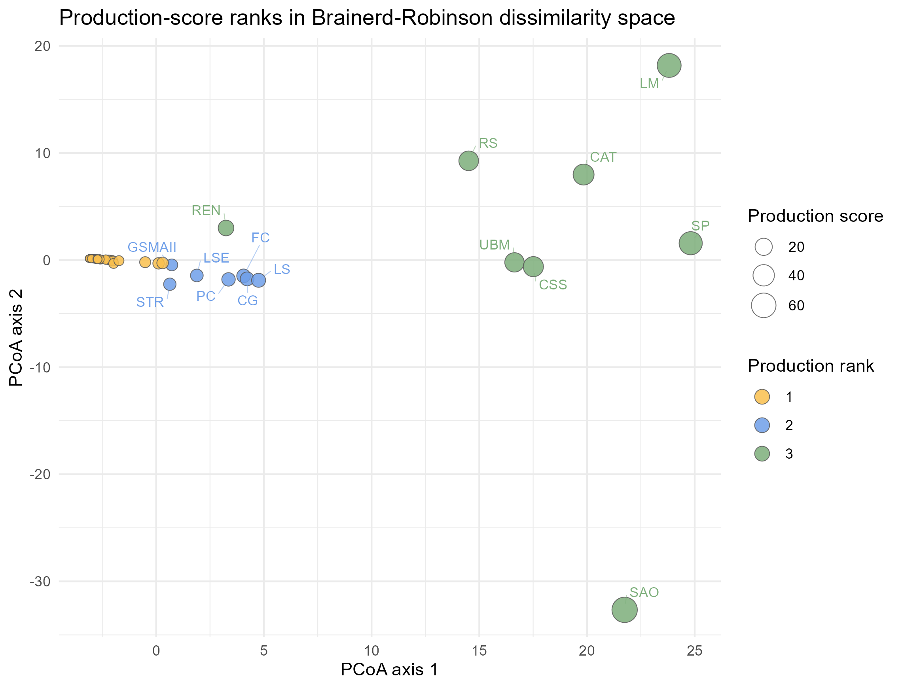
Image not found at this path. Check file name and folder structure.Modelling Neolithic obsidian production and circulation in the Central Mediterranean
Illustrated technical report for GitHub publication, reproducibility documentation, and methodological transparency.
The CHRONOS workflow classifies obsidian assemblages by technological production involvement and models potential circulation pathways across the Central Mediterranean during two Neolithic chronological intervals: 6100–5500 cal BC and 5500–4900 cal BC.
RAWDATA/, standardises column names, converts coordinates and counts to numeric values, and removes incomplete records.OUTPUTS/.| Rule set | Allowed directed links | Interpretation |
|---|---|---|
| Rule A | 4-3, 3-2, 3-1, 2-1 | Parsimonious hierarchical model excluding direct source-to-intermediate links. |
| Rule B | 4-3, 4-2, 3-2, 3-1, 2-1 | Less restrictive model allowing direct links from sources to intermediate sites. |
| Rule C | 4-3, 3-2, 2-1 | Strict stepped hierarchical model. |

Image not found at this path. Check file name and folder structure.Diagnostic ordination showing whether the production-score ranks occupy distinguishable areas of the technological dissimilarity space. Rank 1 sites form the background, while Rank 2 and Rank 3 sites are labelled using short site codes.
OUTPUTS/PCoA_BR_by_production_rank_all_sites.png
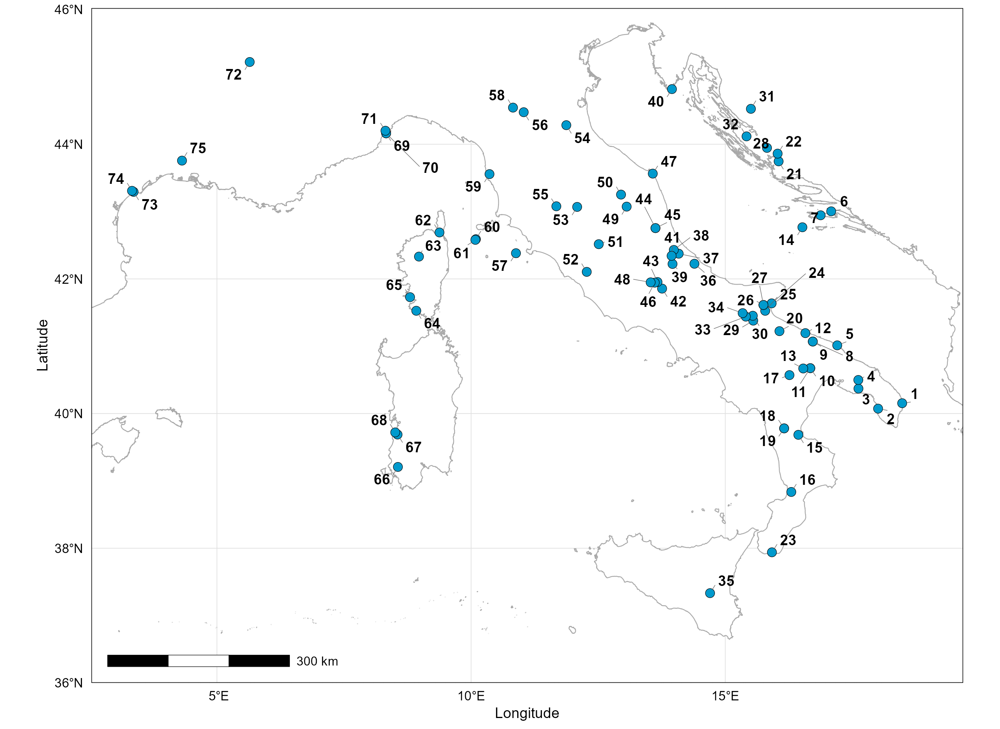
Image not found at this path. Check file name and folder structure.'); this.remove();" />Publication-oriented map of all sites. Numbers correspond to the lookup table exported as all_sites_numbered_map_lookup.csv.
OUTPUTS/all_sites_numbered_black_white_map.png
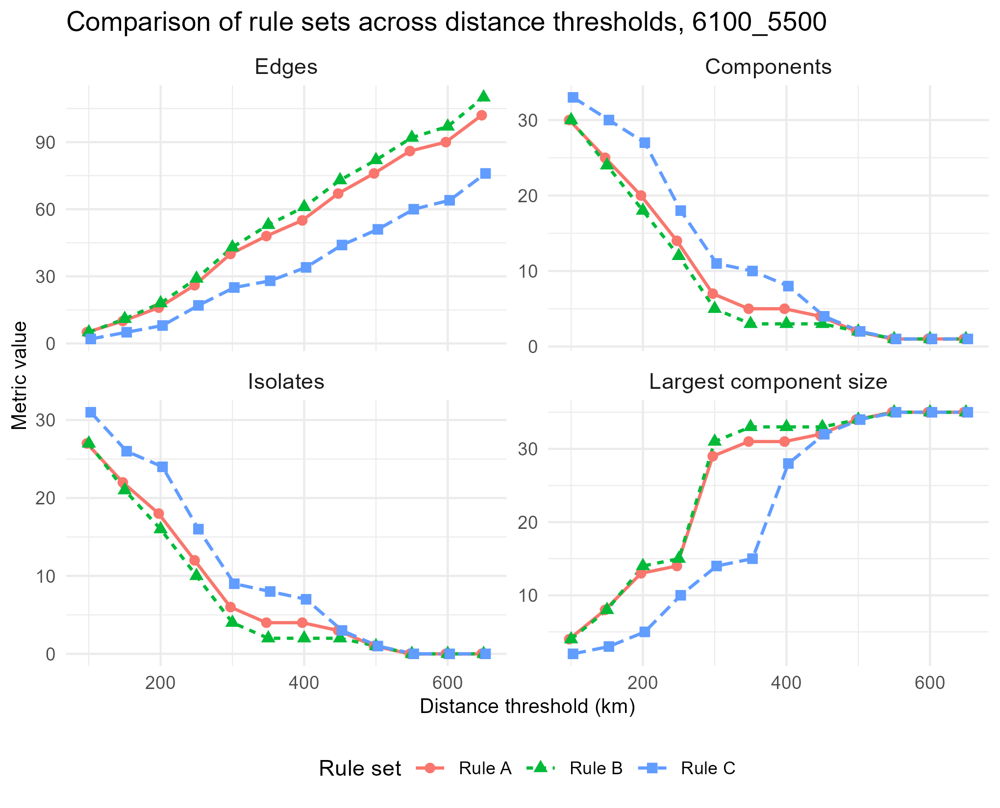
Image not found at this path. Check file name and folder structure.Sensitivity plot comparing edges, components, isolates, and largest component size across distance thresholds and rule sets. This figure is used to evaluate how quickly each rule set approaches a connected network.
OUTPUTS/Obsidian_network_6100_5500/rule_set_metric_comparison_6100_5500.png
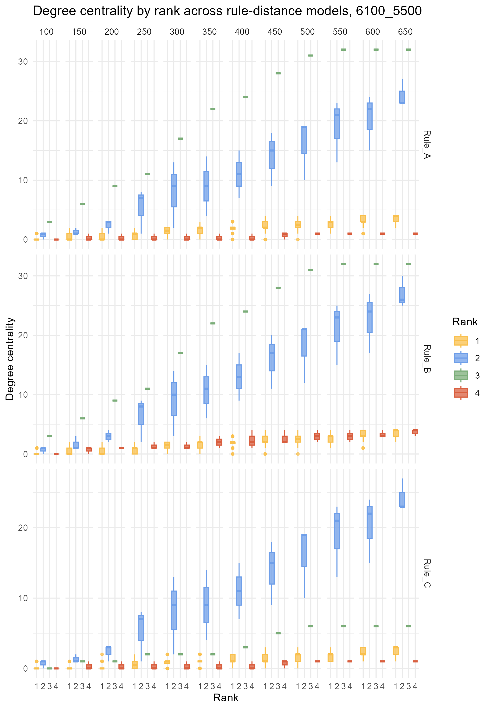
Image not found at this path. Check file name and folder structure.'); this.remove();" />Boxplot panel showing how degree centrality varies by rank, rule set, and distance threshold. It helps evaluate whether higher-ranked sites systematically occupy more connected positions.
OUTPUTS/Obsidian_network_6100_5500/degree_by_rank_rule_distance_sweep_6100_5500.png
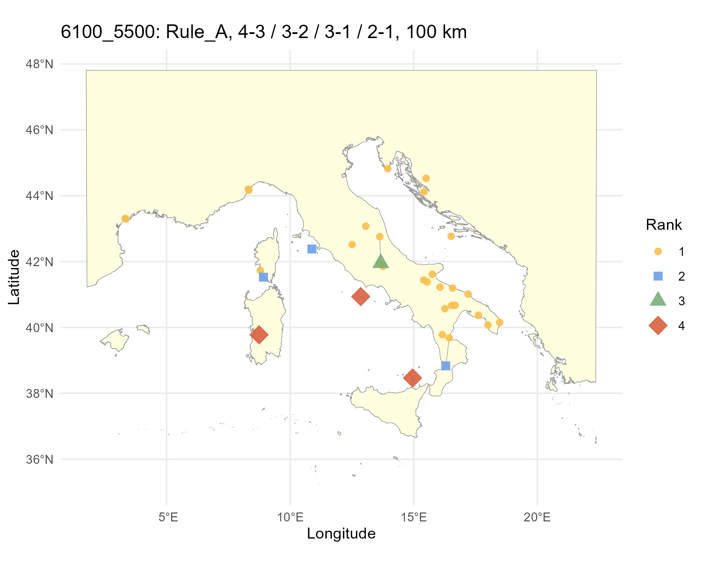
Image not found at this path. Check file name and folder structure.Geographic network map generated for the 100 km threshold. Rule A: parsimonious hierarchical model; allowed links 4-3, 3-2, 3-1, 2-1. Nodes are coloured and shaped by rank; links show permitted connections under the selected rule-distance model.
OUTPUTS/Obsidian_network_6100_5500/Rule_A_100km_map_6100_5500.png
Geographic network map generated for the 150 km threshold. Rule A: parsimonious hierarchical model; allowed links 4-3, 3-2, 3-1, 2-1. Nodes are coloured and shaped by rank; links show permitted connections under the selected rule-distance model.
OUTPUTS/Obsidian_network_6100_5500/Rule_A_150km_map_6100_5500.png
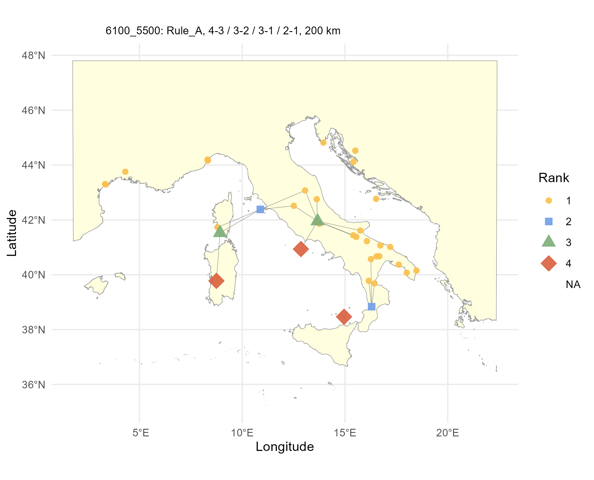
Image not found at this path. Check file name and folder structure.'); this.remove();" />Geographic network map generated for the 200 km threshold. Rule A: parsimonious hierarchical model; allowed links 4-3, 3-2, 3-1, 2-1. Nodes are coloured and shaped by rank; links show permitted connections under the selected rule-distance model.
OUTPUTS/Obsidian_network_6100_5500/Rule_A_200km_map_6100_5500.png
Geographic network map generated for the 250 km threshold. Rule A: parsimonious hierarchical model; allowed links 4-3, 3-2, 3-1, 2-1. Nodes are coloured and shaped by rank; links show permitted connections under the selected rule-distance model.
OUTPUTS/Obsidian_network_6100_5500/Rule_A_250km_map_6100_5500.png
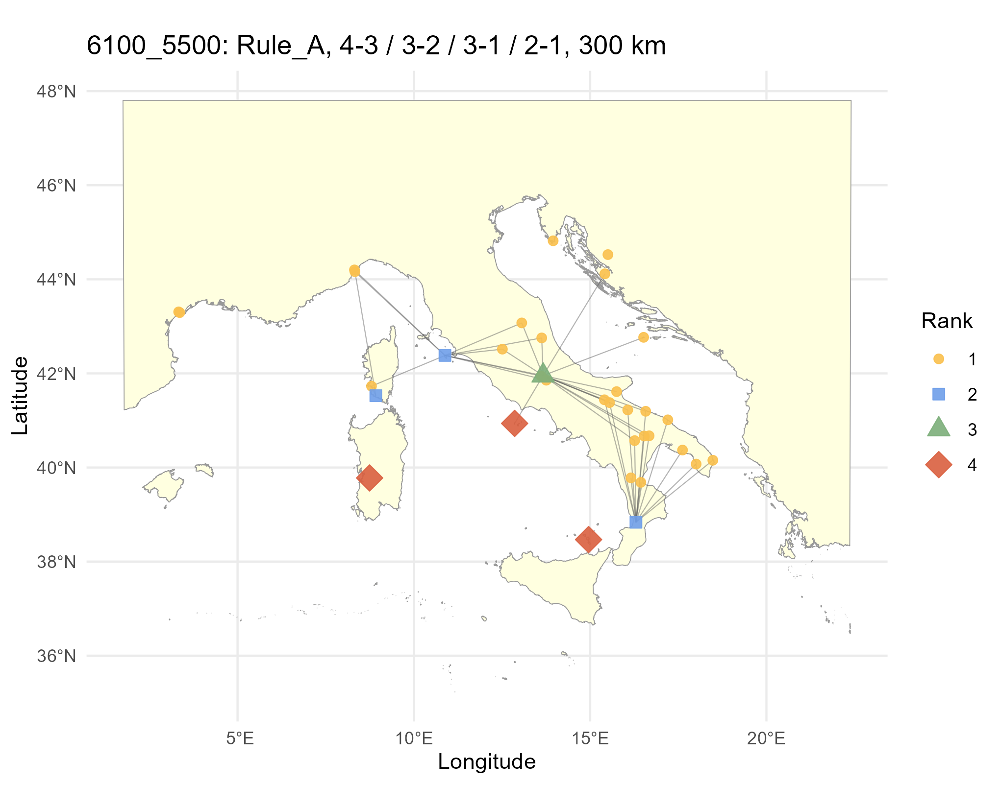
Image not found at this path. Check file name and folder structure.'); this.remove();" />Geographic network map generated for the 300 km threshold. Rule A: parsimonious hierarchical model; allowed links 4-3, 3-2, 3-1, 2-1. Nodes are coloured and shaped by rank; links show permitted connections under the selected rule-distance model.
OUTPUTS/Obsidian_network_6100_5500/Rule_A_300km_map_6100_5500.png
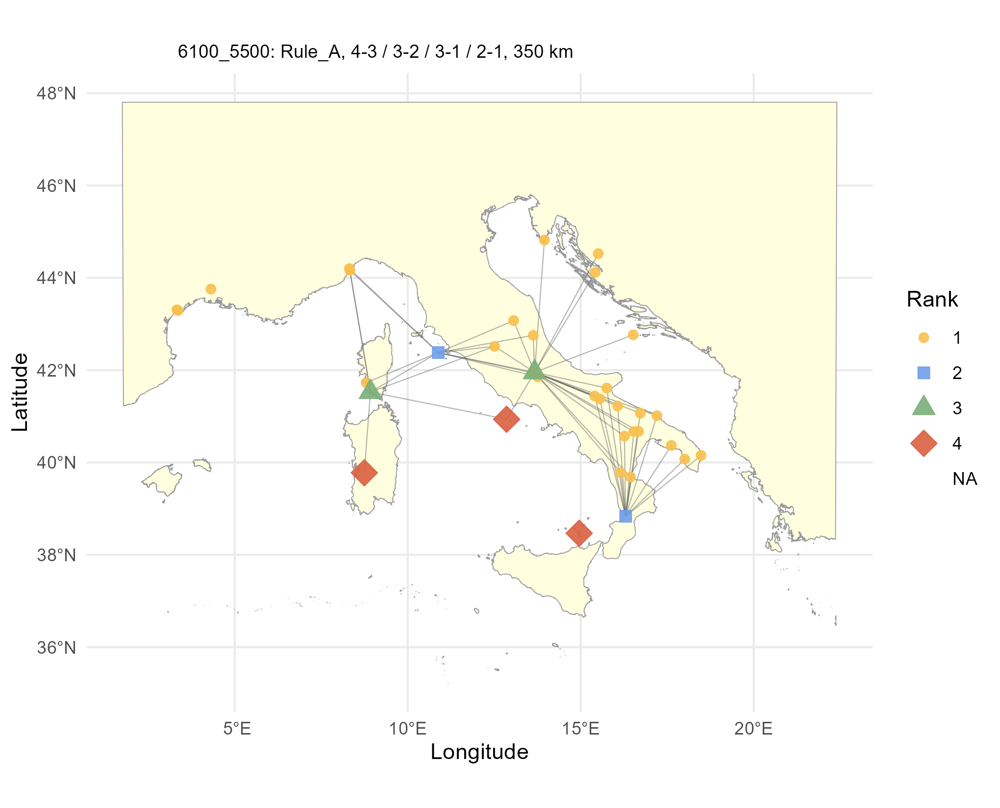
Image not found at this path. Check file name and folder structure.'); this.remove();" />Geographic network map generated for the 350 km threshold. Rule A: parsimonious hierarchical model; allowed links 4-3, 3-2, 3-1, 2-1. Nodes are coloured and shaped by rank; links show permitted connections under the selected rule-distance model.
OUTPUTS/Obsidian_network_6100_5500/Rule_A_350km_map_6100_5500.png
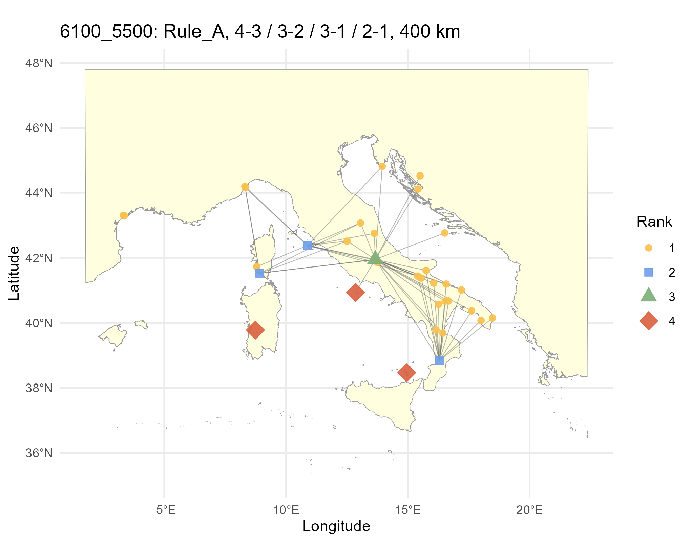
Image not found at this path. Check file name and folder structure.'); this.remove();" />Geographic network map generated for the 400 km threshold. Rule A: parsimonious hierarchical model; allowed links 4-3, 3-2, 3-1, 2-1. Nodes are coloured and shaped by rank; links show permitted connections under the selected rule-distance model.
OUTPUTS/Obsidian_network_6100_5500/Rule_A_400km_map_6100_5500.png
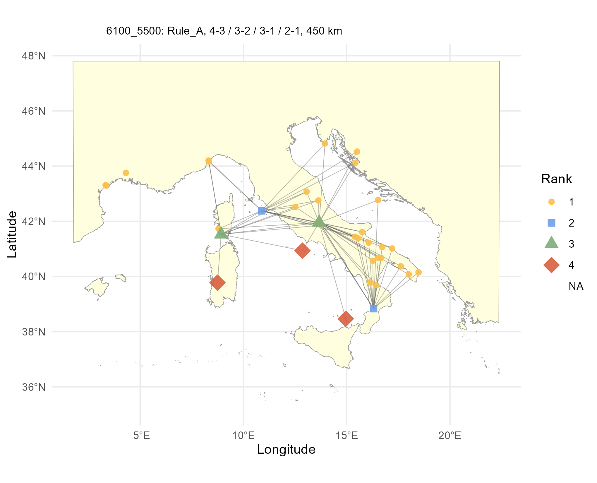
Image not found at this path. Check file name and folder structure.'); this.remove();" />Geographic network map generated for the 450 km threshold. Rule A: parsimonious hierarchical model; allowed links 4-3, 3-2, 3-1, 2-1. Nodes are coloured and shaped by rank; links show permitted connections under the selected rule-distance model.
OUTPUTS/Obsidian_network_6100_5500/Rule_A_450km_map_6100_5500.png
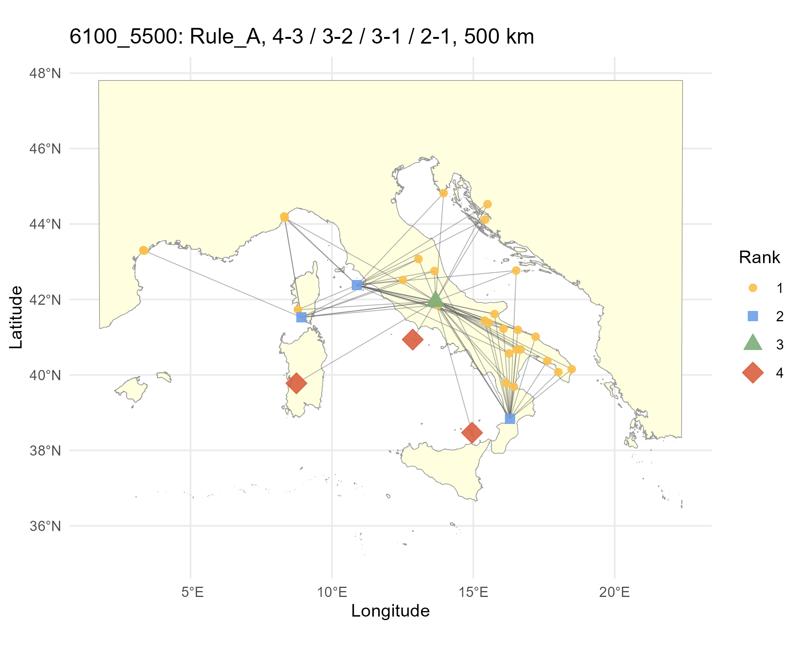
Image not found at this path. Check file name and folder structure.'); this.remove();" />Geographic network map generated for the 500 km threshold. Rule A: parsimonious hierarchical model; allowed links 4-3, 3-2, 3-1, 2-1. Nodes are coloured and shaped by rank; links show permitted connections under the selected rule-distance model.
OUTPUTS/Obsidian_network_6100_5500/Rule_A_500km_map_6100_5500.png
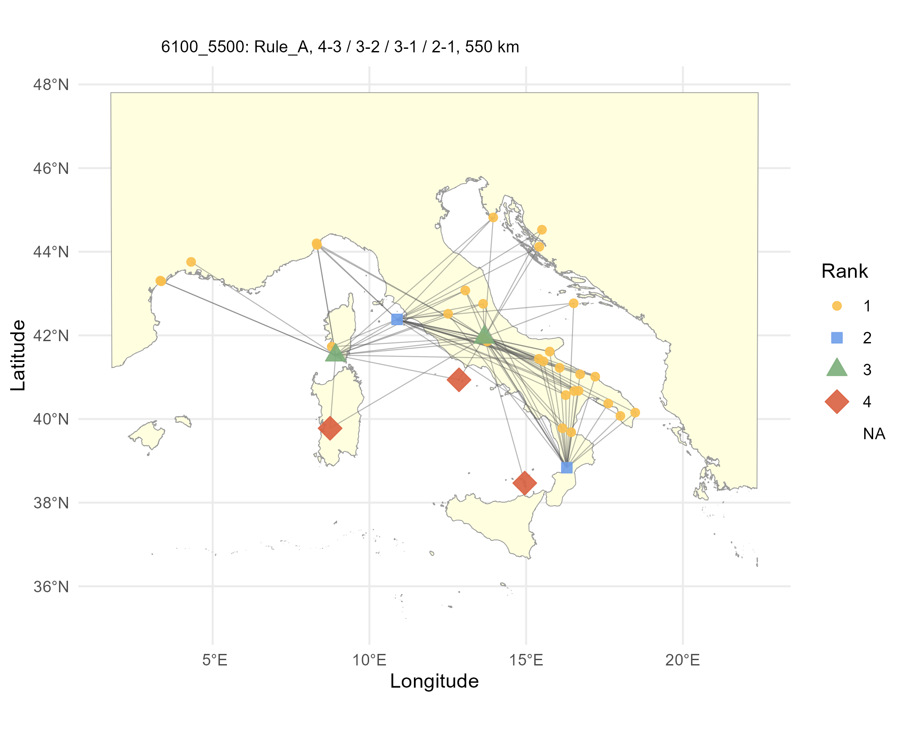
Image not found at this path. Check file name and folder structure.'); this.remove();" />Geographic network map generated for the 550 km threshold. Rule A: parsimonious hierarchical model; allowed links 4-3, 3-2, 3-1, 2-1. Nodes are coloured and shaped by rank; links show permitted connections under the selected rule-distance model.
OUTPUTS/Obsidian_network_6100_5500/Rule_A_550km_map_6100_5500.png
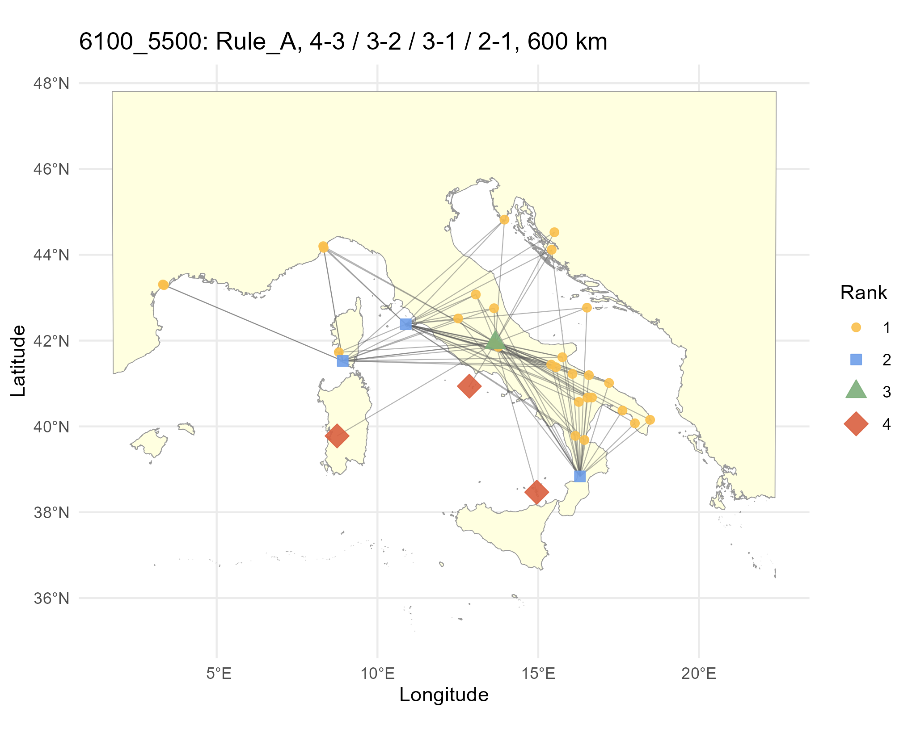
Image not found at this path. Check file name and folder structure.'); this.remove();" />Geographic network map generated for the 600 km threshold. Rule A: parsimonious hierarchical model; allowed links 4-3, 3-2, 3-1, 2-1. Nodes are coloured and shaped by rank; links show permitted connections under the selected rule-distance model.
OUTPUTS/Obsidian_network_6100_5500/Rule_A_600km_map_6100_5500.png
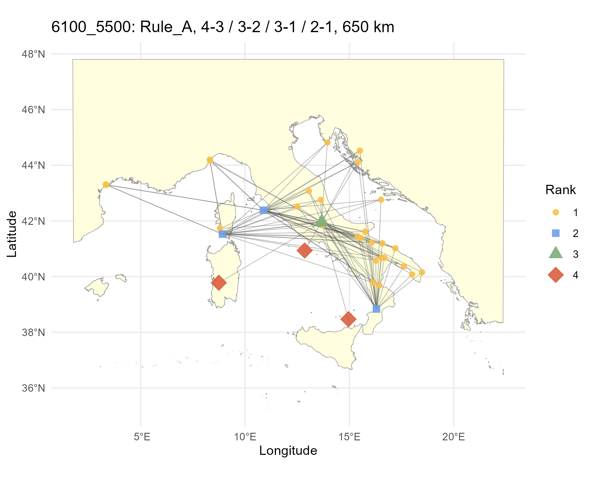
Image not found at this path. Check file name and folder structure.'); this.remove();" />Geographic network map generated for the 650 km threshold. Rule A: parsimonious hierarchical model; allowed links 4-3, 3-2, 3-1, 2-1. Nodes are coloured and shaped by rank; links show permitted connections under the selected rule-distance model.
OUTPUTS/Obsidian_network_6100_5500/Rule_A_650km_map_6100_5500.png
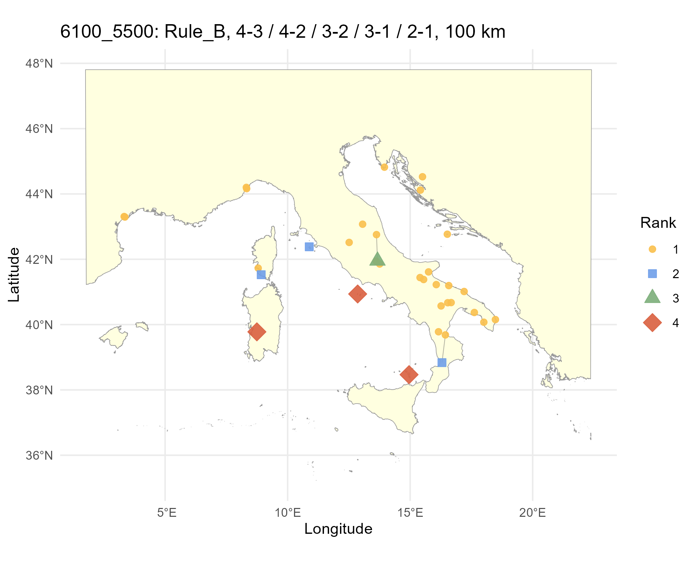
Image not found at this path. Check file name and folder structure.'); this.remove();" />Geographic network map generated for the 100 km threshold. Rule B: less restrictive model; adds direct 4-2 source-to-intermediate links. Nodes are coloured and shaped by rank; links show permitted connections under the selected rule-distance model.
OUTPUTS/Obsidian_network_6100_5500/Rule_B_100km_map_6100_5500.png
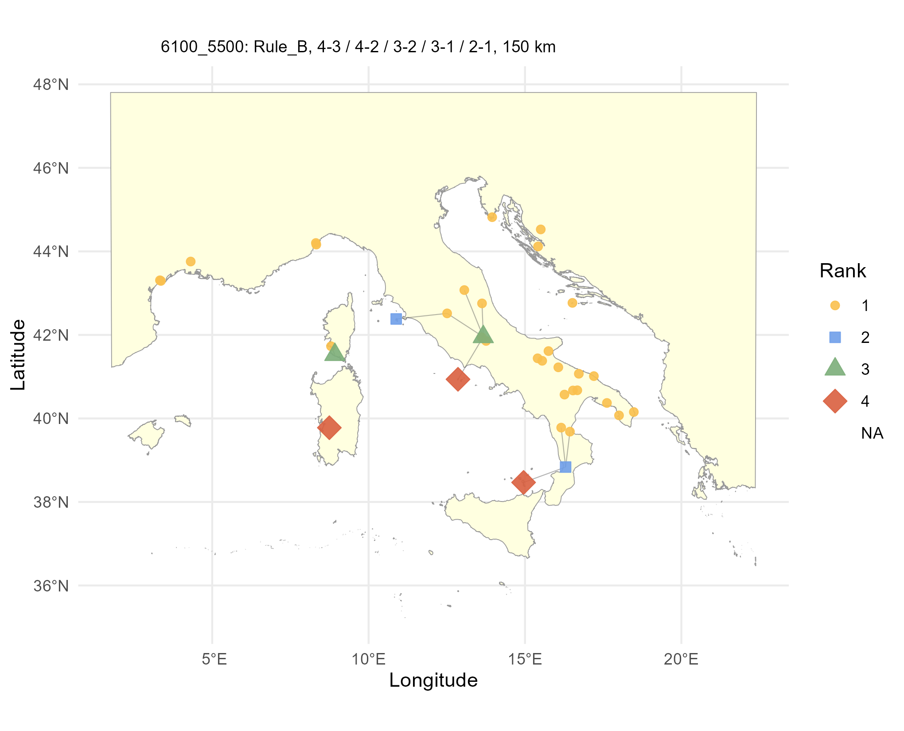
Image not found at this path. Check file name and folder structure.'); this.remove();" />Geographic network map generated for the 150 km threshold. Rule B: less restrictive model; adds direct 4-2 source-to-intermediate links. Nodes are coloured and shaped by rank; links show permitted connections under the selected rule-distance model.
OUTPUTS/Obsidian_network_6100_5500/Rule_B_150km_map_6100_5500.png
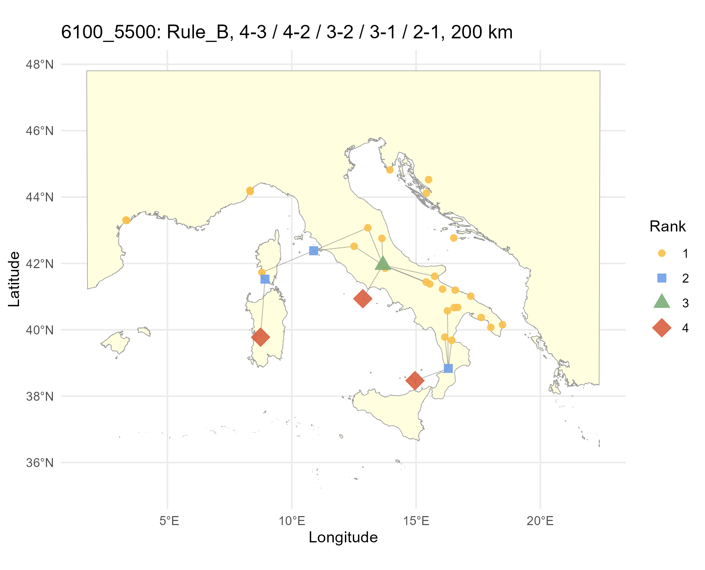
Image not found at this path. Check file name and folder structure.'); this.remove();" />Geographic network map generated for the 200 km threshold. Rule B: less restrictive model; adds direct 4-2 source-to-intermediate links. Nodes are coloured and shaped by rank; links show permitted connections under the selected rule-distance model.
OUTPUTS/Obsidian_network_6100_5500/Rule_B_200km_map_6100_5500.png
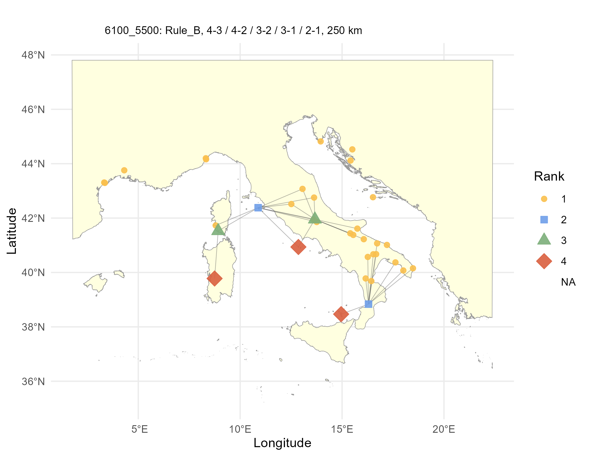
Image not found at this path. Check file name and folder structure.'); this.remove();" />Geographic network map generated for the 250 km threshold. Rule B: less restrictive model; adds direct 4-2 source-to-intermediate links. Nodes are coloured and shaped by rank; links show permitted connections under the selected rule-distance model.
OUTPUTS/Obsidian_network_6100_5500/Rule_B_250km_map_6100_5500.png
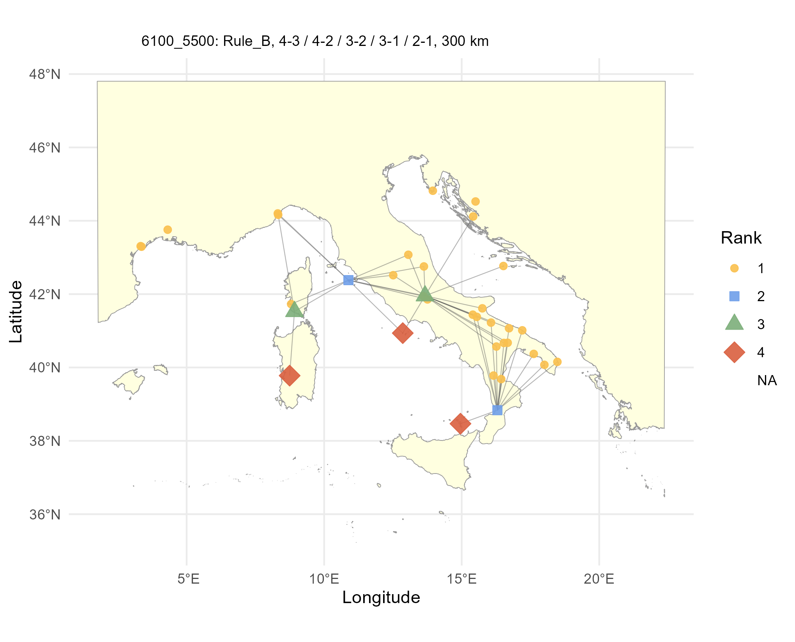
Image not found at this path. Check file name and folder structure.'); this.remove();" />Geographic network map generated for the 300 km threshold. Rule B: less restrictive model; adds direct 4-2 source-to-intermediate links. Nodes are coloured and shaped by rank; links show permitted connections under the selected rule-distance model.
OUTPUTS/Obsidian_network_6100_5500/Rule_B_300km_map_6100_5500.png
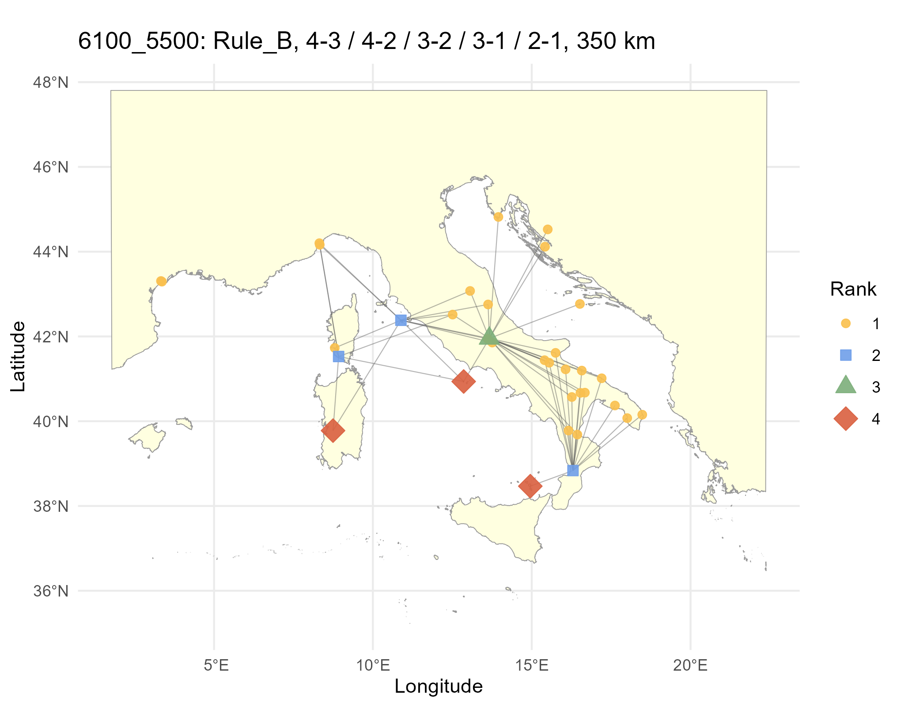
Image not found at this path. Check file name and folder structure.'); this.remove();" />Geographic network map generated for the 350 km threshold. Rule B: less restrictive model; adds direct 4-2 source-to-intermediate links. Nodes are coloured and shaped by rank; links show permitted connections under the selected rule-distance model.
OUTPUTS/Obsidian_network_6100_5500/Rule_B_350km_map_6100_5500.png
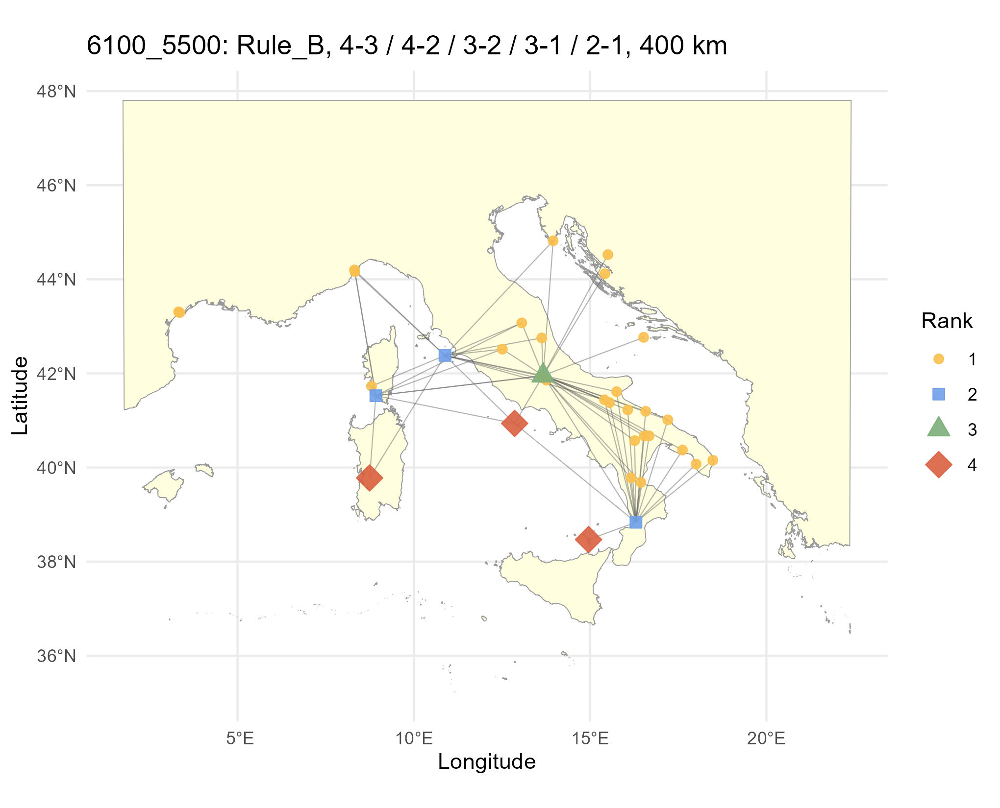
Image not found at this path. Check file name and folder structure.'); this.remove();" />Geographic network map generated for the 400 km threshold. Rule B: less restrictive model; adds direct 4-2 source-to-intermediate links. Nodes are coloured and shaped by rank; links show permitted connections under the selected rule-distance model.
OUTPUTS/Obsidian_network_6100_5500/Rule_B_400km_map_6100_5500.png
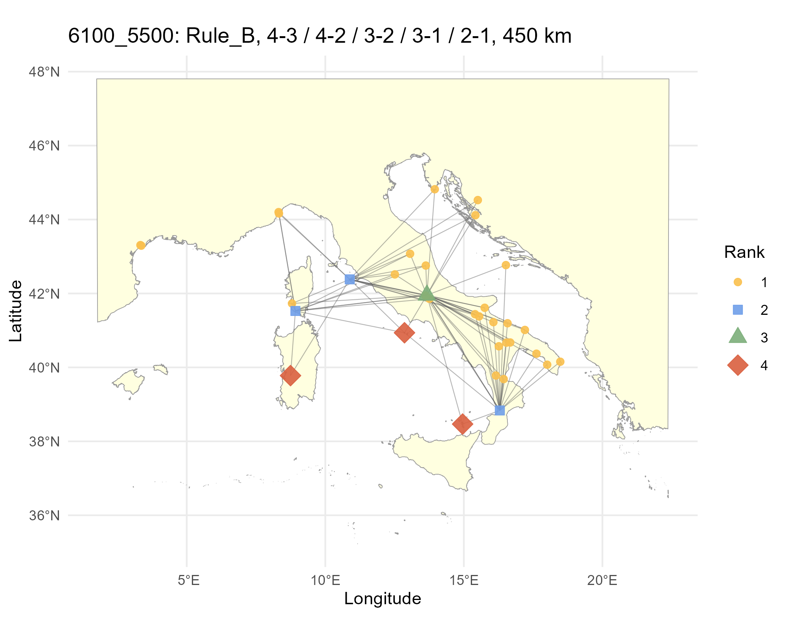
Image not found at this path. Check file name and folder structure.'); this.remove();" />Geographic network map generated for the 450 km threshold. Rule B: less restrictive model; adds direct 4-2 source-to-intermediate links. Nodes are coloured and shaped by rank; links show permitted connections under the selected rule-distance model.
OUTPUTS/Obsidian_network_6100_5500/Rule_B_450km_map_6100_5500.png
Geographic network map generated for the 500 km threshold. Rule B: less restrictive model; adds direct 4-2 source-to-intermediate links. Nodes are coloured and shaped by rank; links show permitted connections under the selected rule-distance model.
OUTPUTS/Obsidian_network_6100_5500/Rule_B_500km_map_6100_5500.png
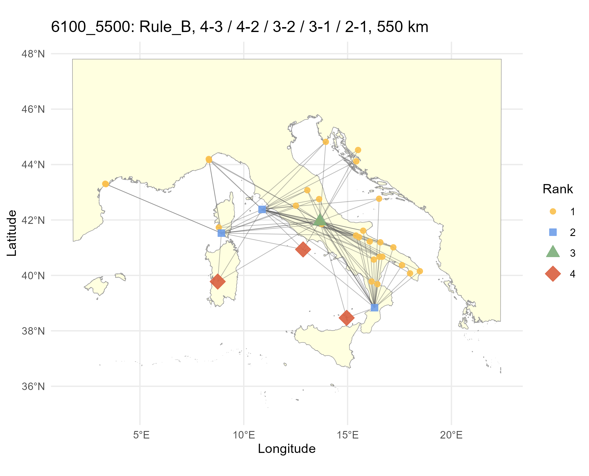
Image not found at this path. Check file name and folder structure.'); this.remove();" />Geographic network map generated for the 550 km threshold. Rule B: less restrictive model; adds direct 4-2 source-to-intermediate links. Nodes are coloured and shaped by rank; links show permitted connections under the selected rule-distance model.
OUTPUTS/Obsidian_network_6100_5500/Rule_B_550km_map_6100_5500.png
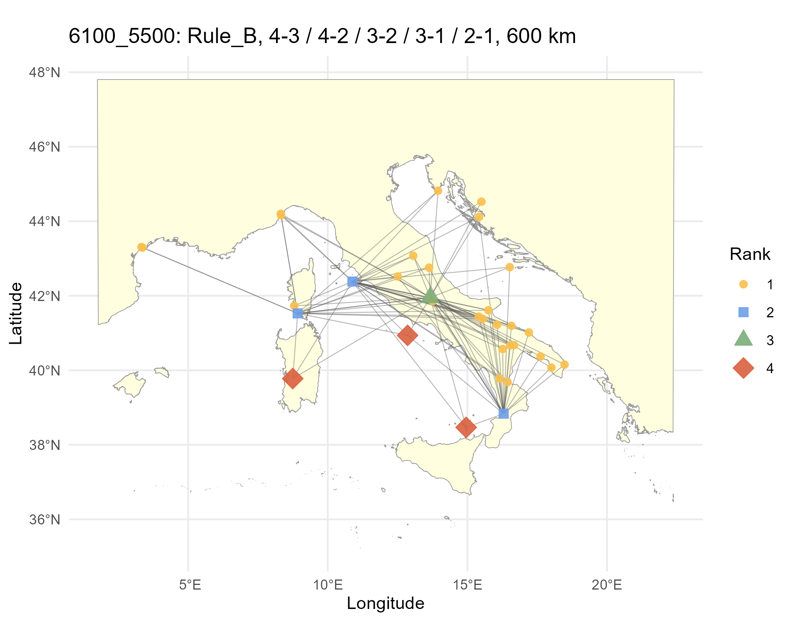
Image not found at this path. Check file name and folder structure.'); this.remove();" />Geographic network map generated for the 600 km threshold. Rule B: less restrictive model; adds direct 4-2 source-to-intermediate links. Nodes are coloured and shaped by rank; links show permitted connections under the selected rule-distance model.
OUTPUTS/Obsidian_network_6100_5500/Rule_B_600km_map_6100_5500.png
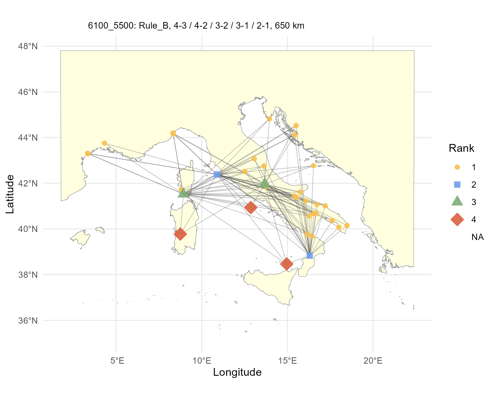
Image not found at this path. Check file name and folder structure.'); this.remove();" />Geographic network map generated for the 650 km threshold. Rule B: less restrictive model; adds direct 4-2 source-to-intermediate links. Nodes are coloured and shaped by rank; links show permitted connections under the selected rule-distance model.
OUTPUTS/Obsidian_network_6100_5500/Rule_B_650km_map_6100_5500.png
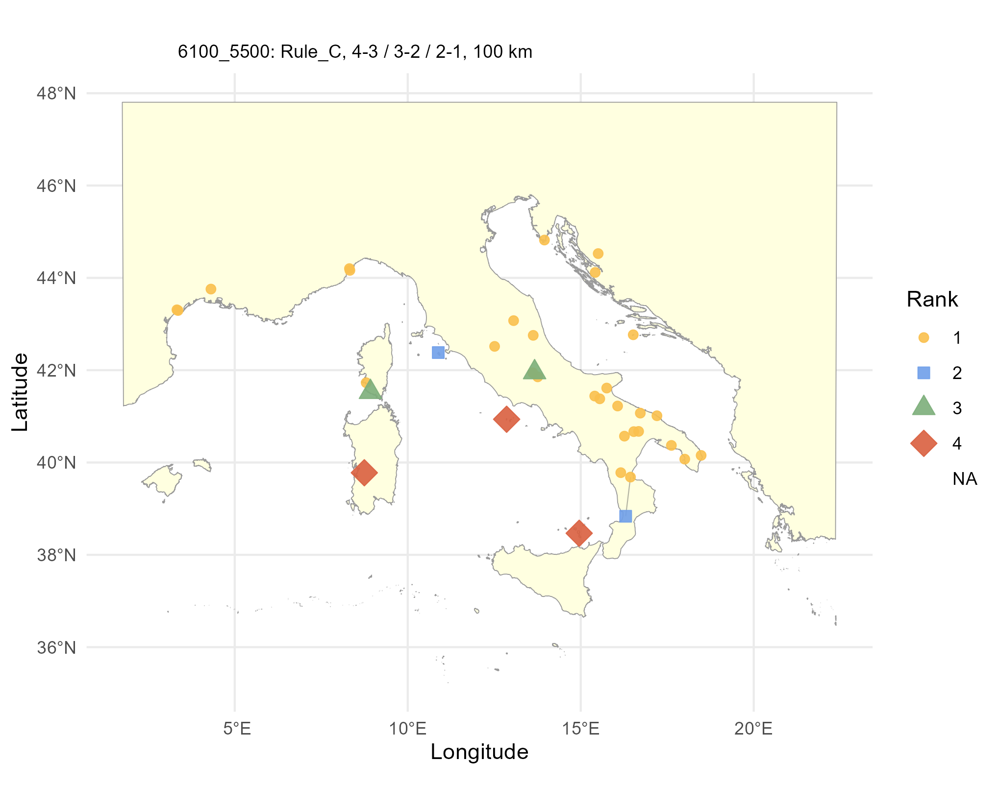
Image not found at this path. Check file name and folder structure.'); this.remove();" />Geographic network map generated for the 100 km threshold. Rule C: strict stepped hierarchical model; allowed links 4-3, 3-2, 2-1. Nodes are coloured and shaped by rank; links show permitted connections under the selected rule-distance model.
OUTPUTS/Obsidian_network_6100_5500/Rule_C_100km_map_6100_5500.png
Geographic network map generated for the 150 km threshold. Rule C: strict stepped hierarchical model; allowed links 4-3, 3-2, 2-1. Nodes are coloured and shaped by rank; links show permitted connections under the selected rule-distance model.
OUTPUTS/Obsidian_network_6100_5500/Rule_C_150km_map_6100_5500.png
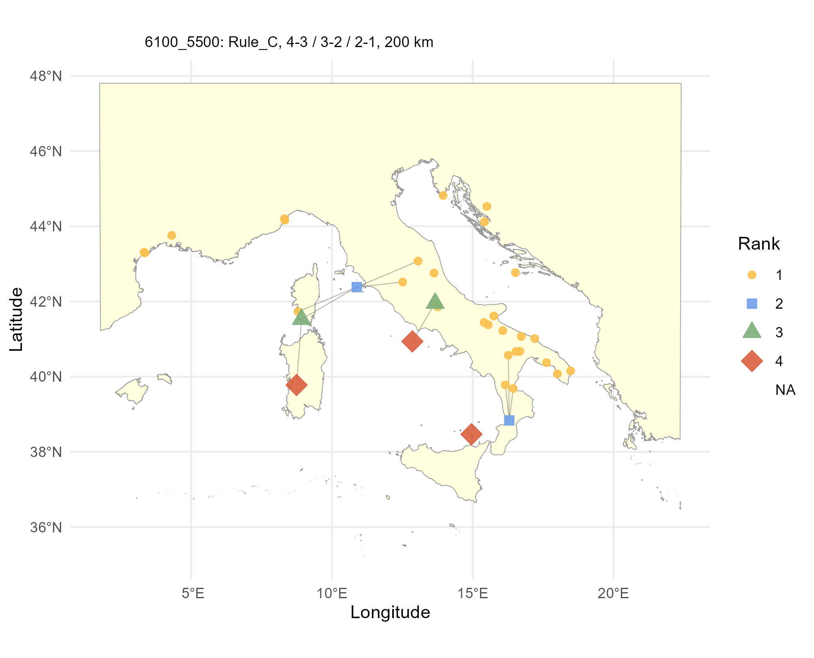
Image not found at this path. Check file name and folder structure.'); this.remove();" />Geographic network map generated for the 200 km threshold. Rule C: strict stepped hierarchical model; allowed links 4-3, 3-2, 2-1. Nodes are coloured and shaped by rank; links show permitted connections under the selected rule-distance model.
OUTPUTS/Obsidian_network_6100_5500/Rule_C_200km_map_6100_5500.png
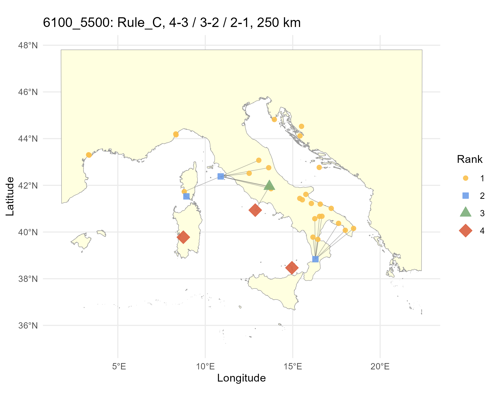
Image not found at this path. Check file name and folder structure.'); this.remove();" />Geographic network map generated for the 250 km threshold. Rule C: strict stepped hierarchical model; allowed links 4-3, 3-2, 2-1. Nodes are coloured and shaped by rank; links show permitted connections under the selected rule-distance model.
OUTPUTS/Obsidian_network_6100_5500/Rule_C_250km_map_6100_5500.png
Geographic network map generated for the 300 km threshold. Rule C: strict stepped hierarchical model; allowed links 4-3, 3-2, 2-1. Nodes are coloured and shaped by rank; links show permitted connections under the selected rule-distance model.
OUTPUTS/Obsidian_network_6100_5500/Rule_C_300km_map_6100_5500.png
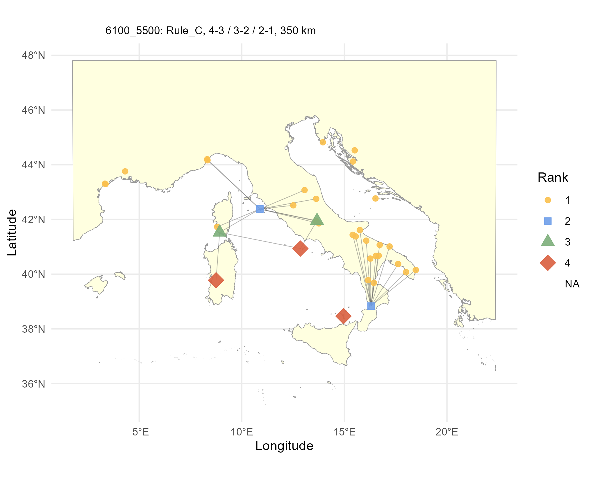
Image not found at this path. Check file name and folder structure.'); this.remove();" />Geographic network map generated for the 350 km threshold. Rule C: strict stepped hierarchical model; allowed links 4-3, 3-2, 2-1. Nodes are coloured and shaped by rank; links show permitted connections under the selected rule-distance model.
OUTPUTS/Obsidian_network_6100_5500/Rule_C_350km_map_6100_5500.png
Geographic network map generated for the 400 km threshold. Rule C: strict stepped hierarchical model; allowed links 4-3, 3-2, 2-1. Nodes are coloured and shaped by rank; links show permitted connections under the selected rule-distance model.
OUTPUTS/Obsidian_network_6100_5500/Rule_C_400km_map_6100_5500.png
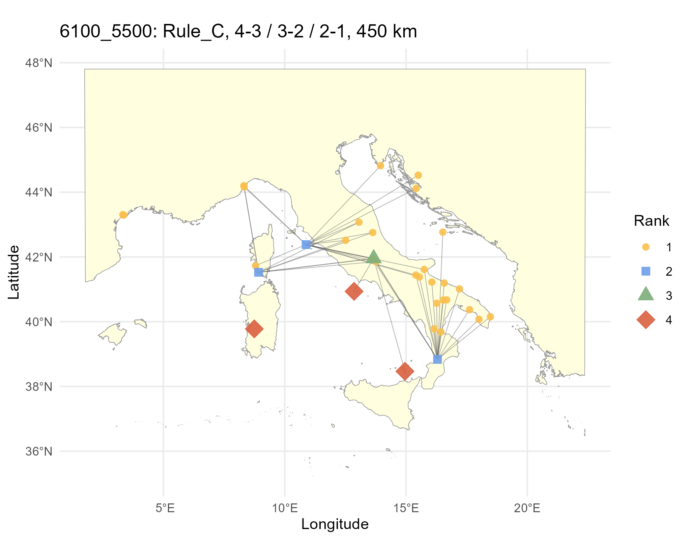
Image not found at this path. Check file name and folder structure.'); this.remove();" />Geographic network map generated for the 450 km threshold. Rule C: strict stepped hierarchical model; allowed links 4-3, 3-2, 2-1. Nodes are coloured and shaped by rank; links show permitted connections under the selected rule-distance model.
OUTPUTS/Obsidian_network_6100_5500/Rule_C_450km_map_6100_5500.png
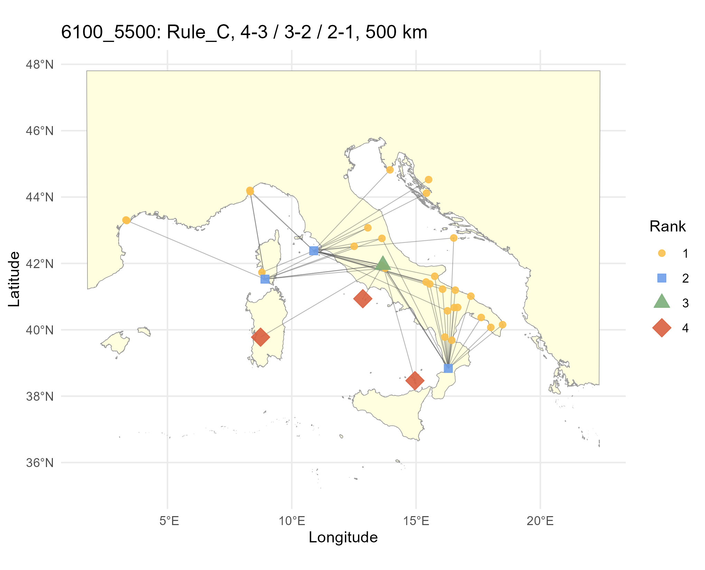
Image not found at this path. Check file name and folder structure.'); this.remove();" />Geographic network map generated for the 500 km threshold. Rule C: strict stepped hierarchical model; allowed links 4-3, 3-2, 2-1. Nodes are coloured and shaped by rank; links show permitted connections under the selected rule-distance model.
OUTPUTS/Obsidian_network_6100_5500/Rule_C_500km_map_6100_5500.png
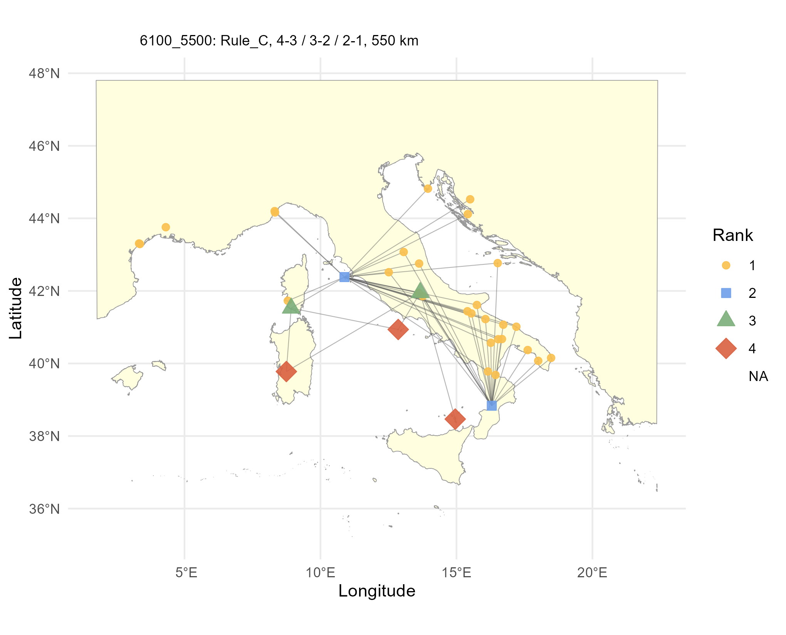
Image not found at this path. Check file name and folder structure.'); this.remove();" />Geographic network map generated for the 550 km threshold. Rule C: strict stepped hierarchical model; allowed links 4-3, 3-2, 2-1. Nodes are coloured and shaped by rank; links show permitted connections under the selected rule-distance model.
OUTPUTS/Obsidian_network_6100_5500/Rule_C_550km_map_6100_5500.png
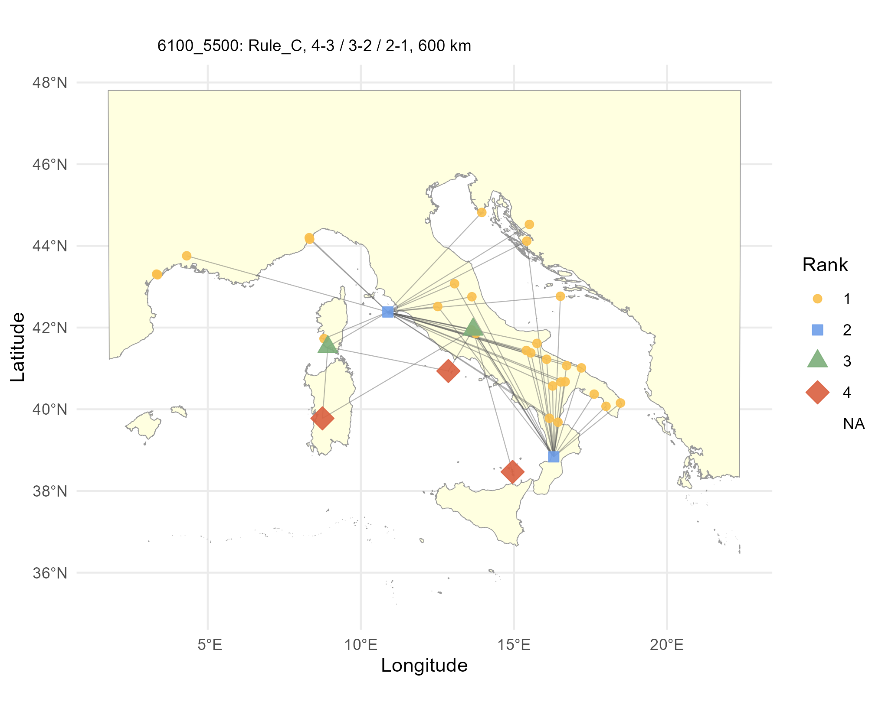
Image not found at this path. Check file name and folder structure.'); this.remove();" />Geographic network map generated for the 600 km threshold. Rule C: strict stepped hierarchical model; allowed links 4-3, 3-2, 2-1. Nodes are coloured and shaped by rank; links show permitted connections under the selected rule-distance model.
OUTPUTS/Obsidian_network_6100_5500/Rule_C_600km_map_6100_5500.png
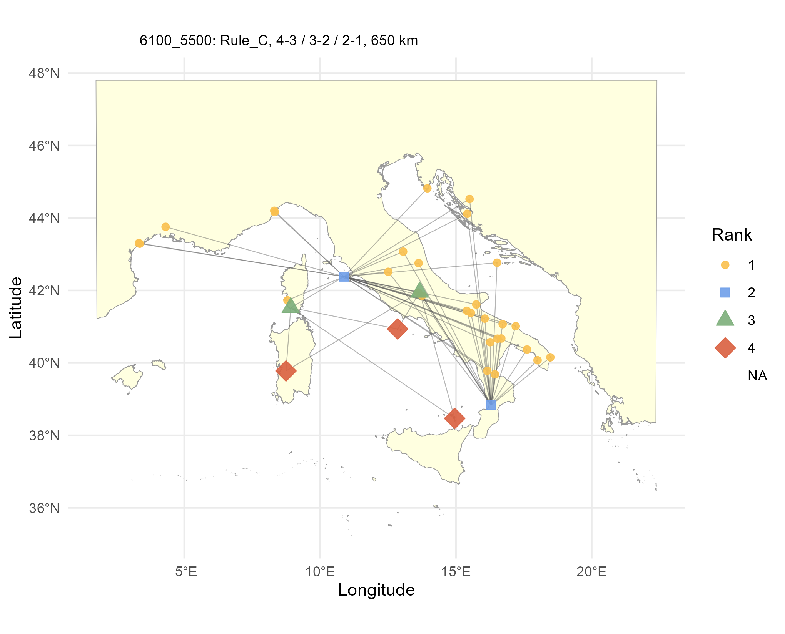
Image not found at this path. Check file name and folder structure.'); this.remove();" />Geographic network map generated for the 650 km threshold. Rule C: strict stepped hierarchical model; allowed links 4-3, 3-2, 2-1. Nodes are coloured and shaped by rank; links show permitted connections under the selected rule-distance model.
OUTPUTS/Obsidian_network_6100_5500/Rule_C_650km_map_6100_5500.png
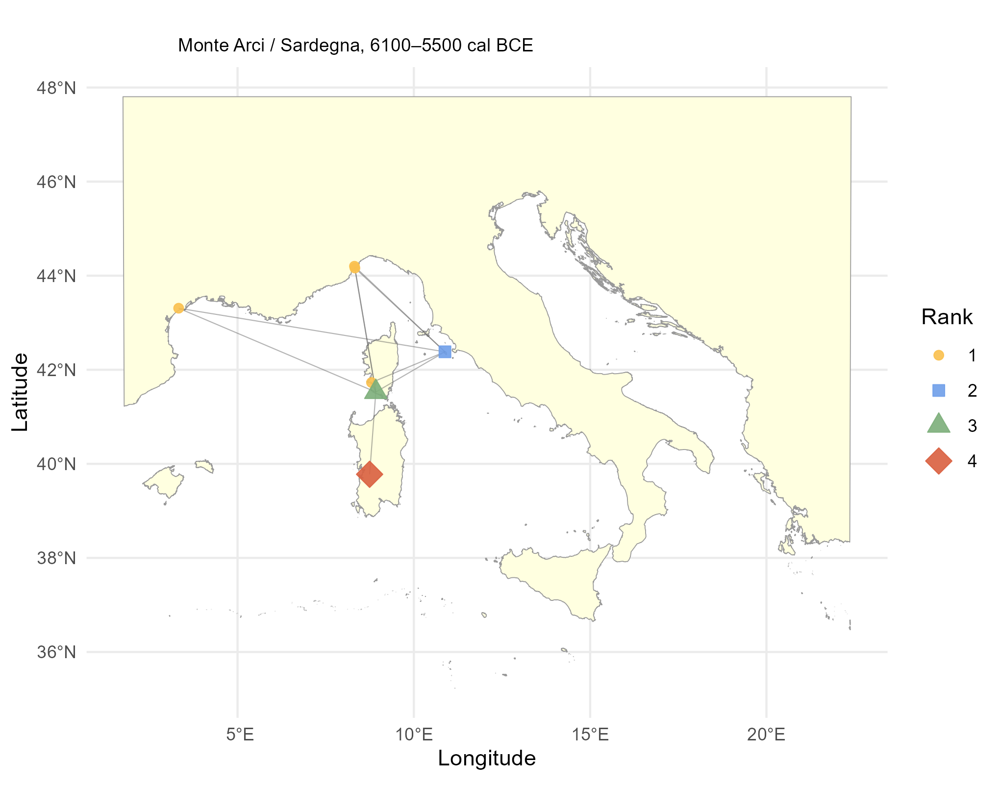
Image not found at this path. Check file name and folder structure.Map of the source-confirmed network retaining the selected source node and sites with confirmed presence of that obsidian source. The caption records whether Rule A or fallback Rule B was used in the underlying model.
OUTPUTS/Obsidian_network_6100_5500/Sardegna_source_confirmed_map_6100_5500.png
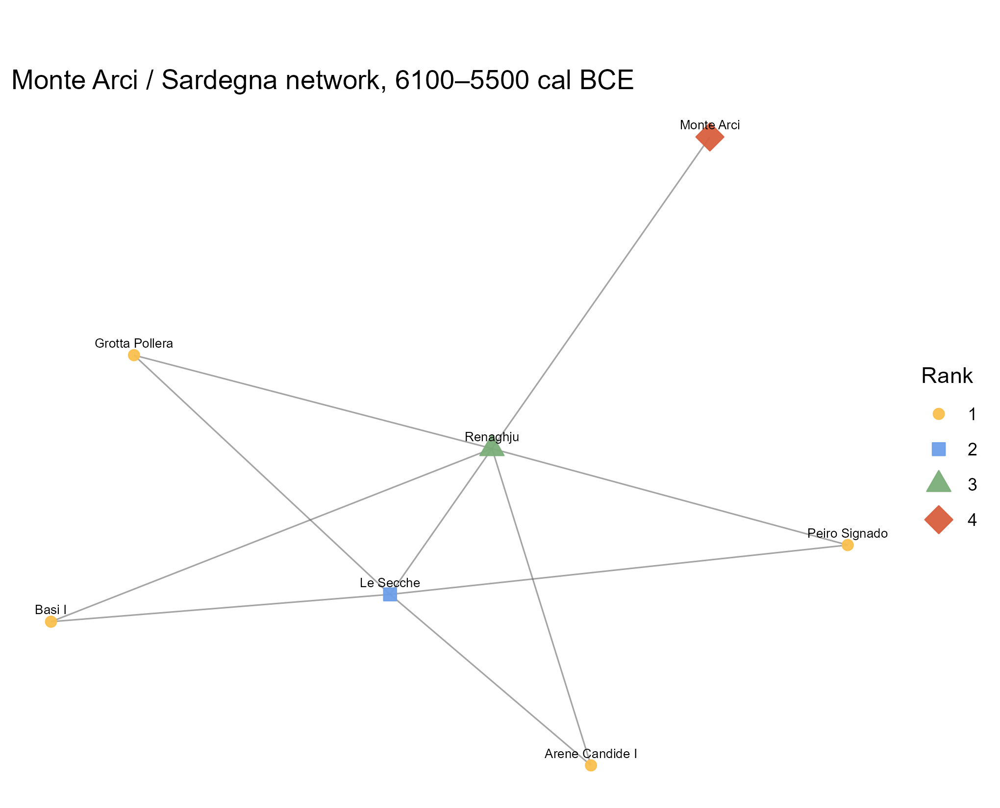
Image not found at this path. Check file name and folder structure.'); this.remove();" />Graph-only layout of the same source-confirmed network, useful for reading network topology without geographic constraints.
OUTPUTS/Obsidian_network_6100_5500/Sardegna_source_confirmed_graph_only_6100_5500.png
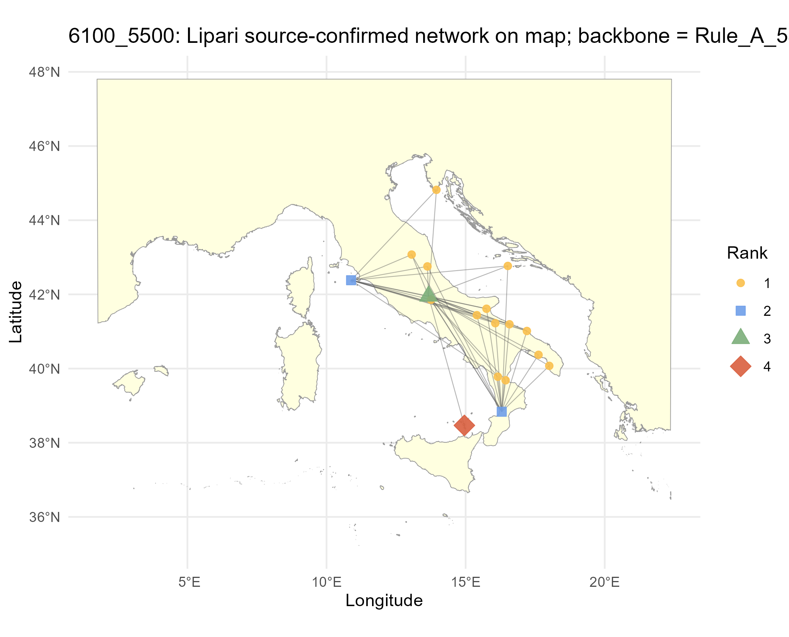
Image not found at this path. Check file name and folder structure.'); this.remove();" />Map of the source-confirmed network retaining the selected source node and sites with confirmed presence of that obsidian source. The caption records whether Rule A or fallback Rule B was used in the underlying model.
OUTPUTS/Obsidian_network_6100_5500/Lipari_source_confirmed_map_6100_5500.png
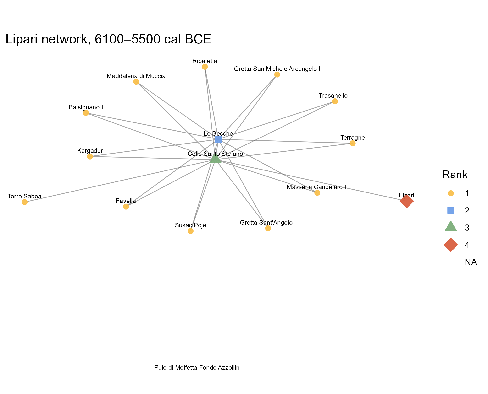
Image not found at this path. Check file name and folder structure.'); this.remove();" />Graph-only layout of the same source-confirmed network, useful for reading network topology without geographic constraints.
OUTPUTS/Obsidian_network_6100_5500/Lipari_source_confirmed_graph_only_6100_5500.png
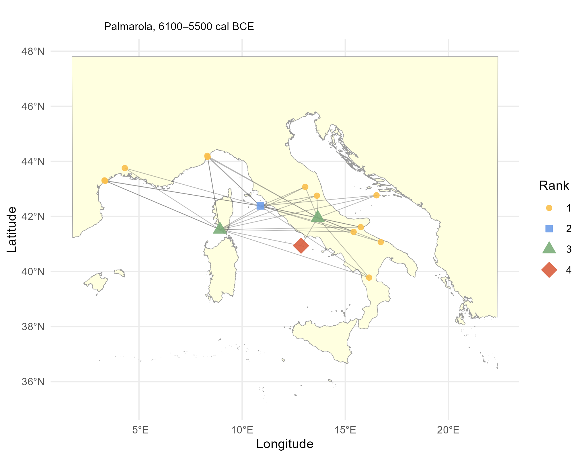
Image not found at this path. Check file name and folder structure.'); this.remove();" />Map of the source-confirmed network retaining the selected source node and sites with confirmed presence of that obsidian source. The caption records whether Rule A or fallback Rule B was used in the underlying model.
OUTPUTS/Obsidian_network_6100_5500/Palmarola_source_confirmed_map_6100_5500.png
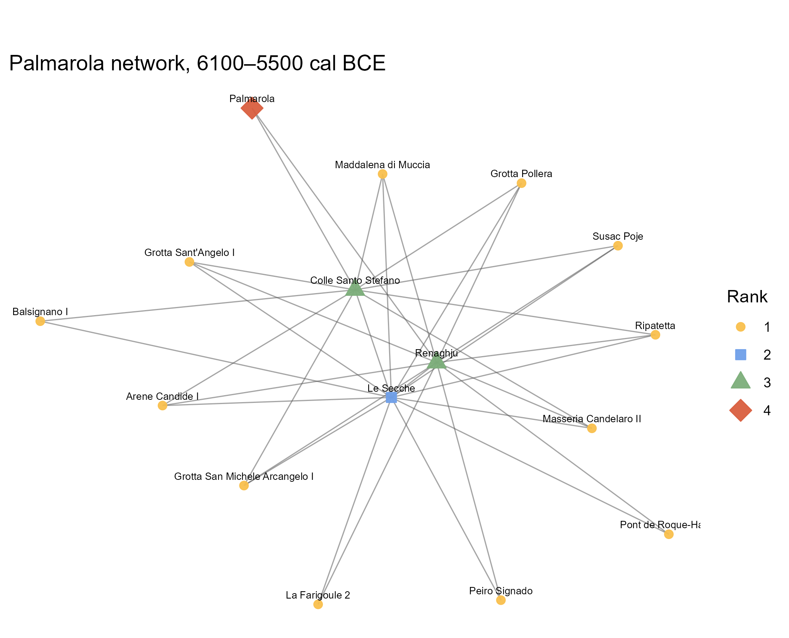
Image not found at this path. Check file name and folder structure.'); this.remove();" />Graph-only layout of the same source-confirmed network, useful for reading network topology without geographic constraints.
OUTPUTS/Obsidian_network_6100_5500/Palmarola_source_confirmed_graph_only_6100_5500.png
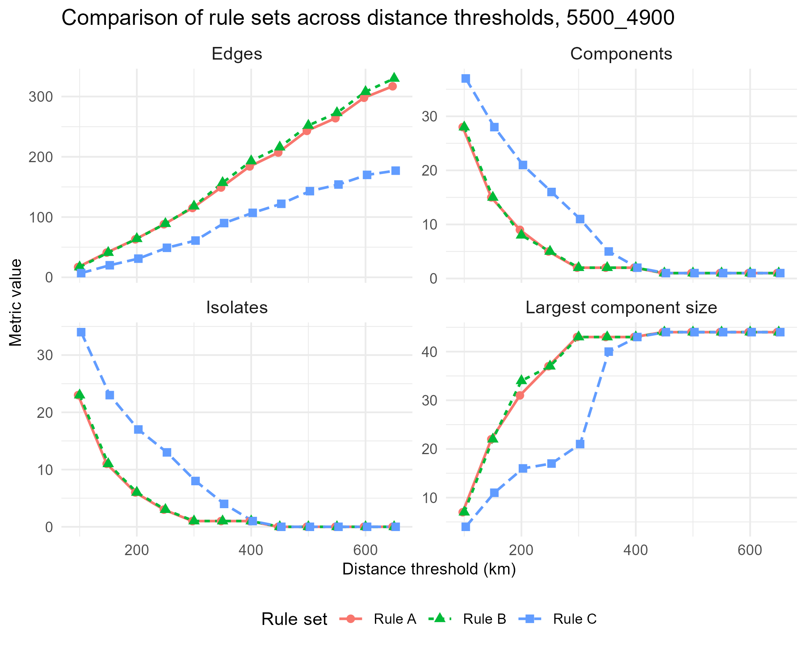
Image not found at this path. Check file name and folder structure.Sensitivity plot comparing edges, components, isolates, and largest component size across distance thresholds and rule sets. This figure is used to evaluate how quickly each rule set approaches a connected network.
OUTPUTS/Obsidian_network_5500_4900/rule_set_metric_comparison_5500_4900.png
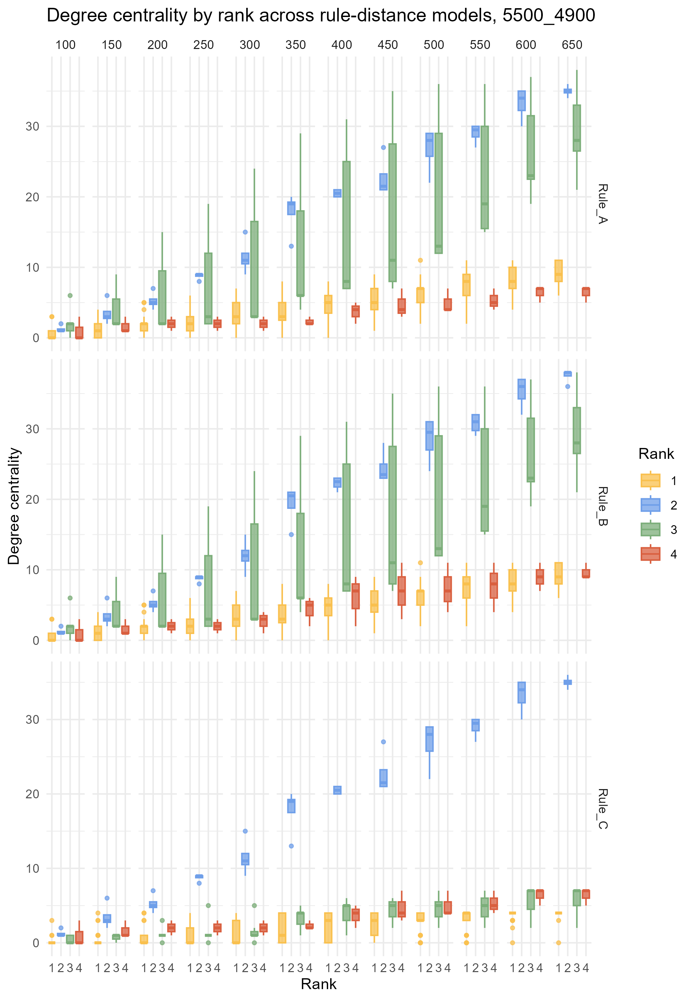
Image not found at this path. Check file name and folder structure.'); this.remove();" />Boxplot panel showing how degree centrality varies by rank, rule set, and distance threshold. It helps evaluate whether higher-ranked sites systematically occupy more connected positions.
OUTPUTS/Obsidian_network_5500_4900/degree_by_rank_rule_distance_sweep_5500_4900.png
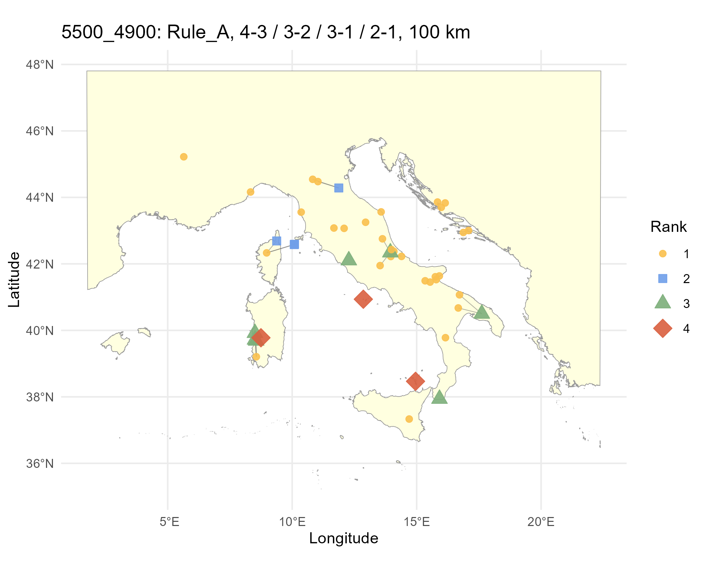
Image not found at this path. Check file name and folder structure.Geographic network map generated for the 100 km threshold. Rule A: parsimonious hierarchical model; allowed links 4-3, 3-2, 3-1, 2-1. Nodes are coloured and shaped by rank; links show permitted connections under the selected rule-distance model.
OUTPUTS/Obsidian_network_5500_4900/Rule_A_100km_map_5500_4900.png
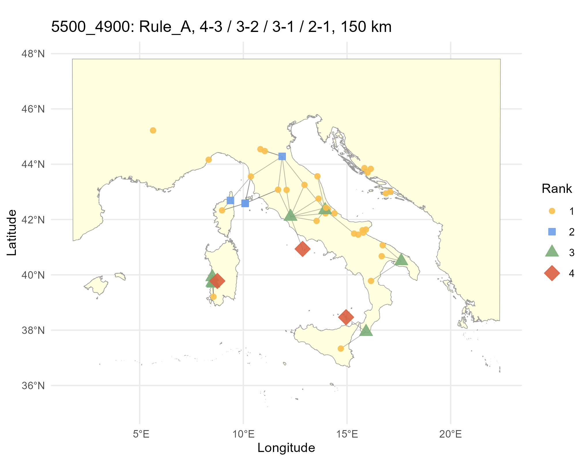
Image not found at this path. Check file name and folder structure.'); this.remove();" />Geographic network map generated for the 150 km threshold. Rule A: parsimonious hierarchical model; allowed links 4-3, 3-2, 3-1, 2-1. Nodes are coloured and shaped by rank; links show permitted connections under the selected rule-distance model.
OUTPUTS/Obsidian_network_5500_4900/Rule_A_150km_map_5500_4900.png
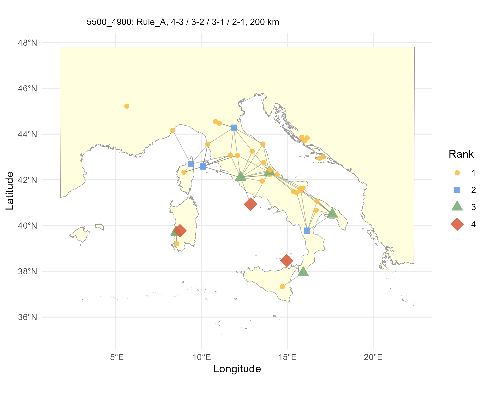
Image not found at this path. Check file name and folder structure.'); this.remove();" />Geographic network map generated for the 200 km threshold. Rule A: parsimonious hierarchical model; allowed links 4-3, 3-2, 3-1, 2-1. Nodes are coloured and shaped by rank; links show permitted connections under the selected rule-distance model.
OUTPUTS/Obsidian_network_5500_4900/Rule_A_200km_map_5500_4900.png
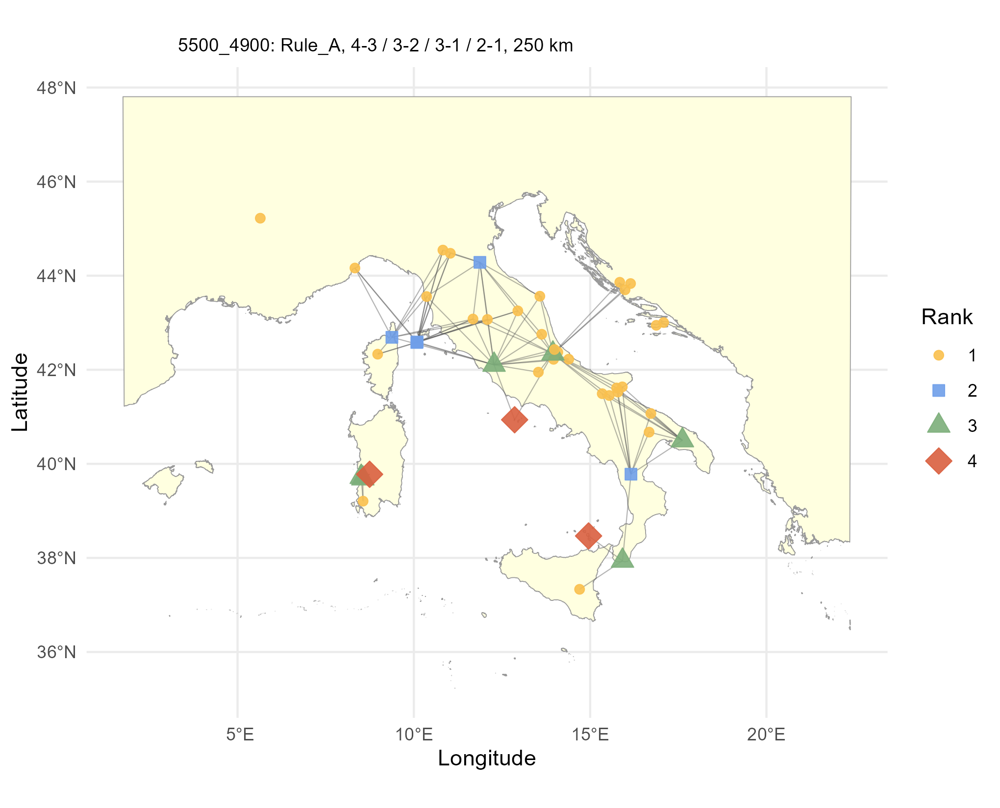
Image not found at this path. Check file name and folder structure.'); this.remove();" />Geographic network map generated for the 250 km threshold. Rule A: parsimonious hierarchical model; allowed links 4-3, 3-2, 3-1, 2-1. Nodes are coloured and shaped by rank; links show permitted connections under the selected rule-distance model.
OUTPUTS/Obsidian_network_5500_4900/Rule_A_250km_map_5500_4900.png
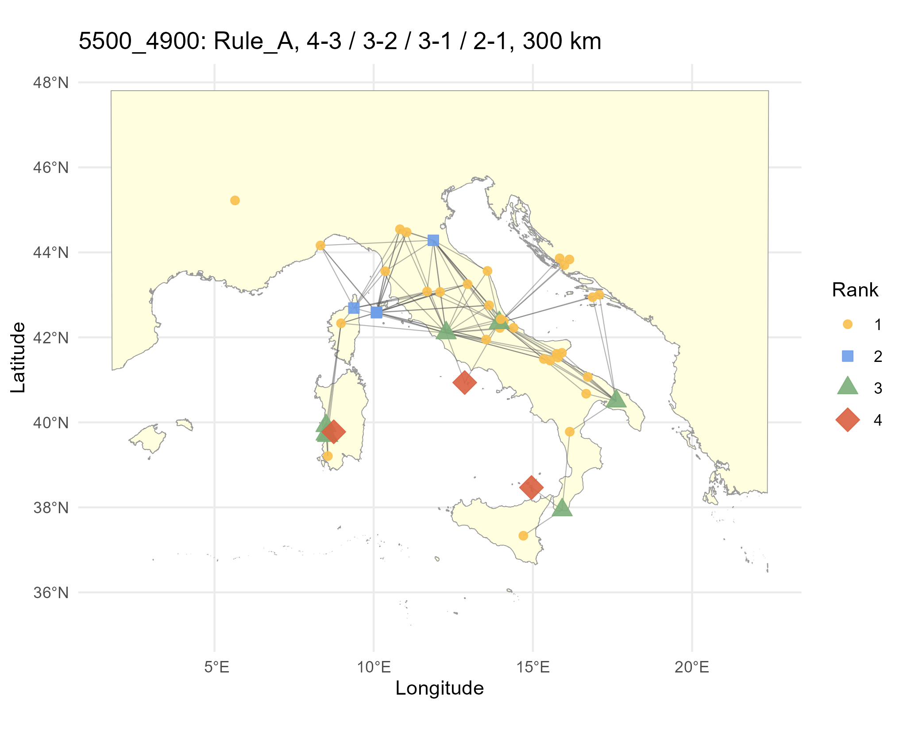
Image not found at this path. Check file name and folder structure.'); this.remove();" />Geographic network map generated for the 300 km threshold. Rule A: parsimonious hierarchical model; allowed links 4-3, 3-2, 3-1, 2-1. Nodes are coloured and shaped by rank; links show permitted connections under the selected rule-distance model.
OUTPUTS/Obsidian_network_5500_4900/Rule_A_300km_map_5500_4900.png
Geographic network map generated for the 350 km threshold. Rule A: parsimonious hierarchical model; allowed links 4-3, 3-2, 3-1, 2-1. Nodes are coloured and shaped by rank; links show permitted connections under the selected rule-distance model.
OUTPUTS/Obsidian_network_5500_4900/Rule_A_350km_map_5500_4900.png
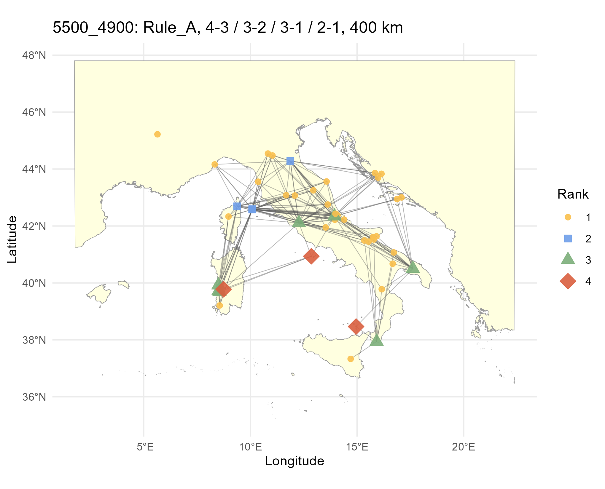
Image not found at this path. Check file name and folder structure.'); this.remove();" />Geographic network map generated for the 400 km threshold. Rule A: parsimonious hierarchical model; allowed links 4-3, 3-2, 3-1, 2-1. Nodes are coloured and shaped by rank; links show permitted connections under the selected rule-distance model.
OUTPUTS/Obsidian_network_5500_4900/Rule_A_400km_map_5500_4900.png
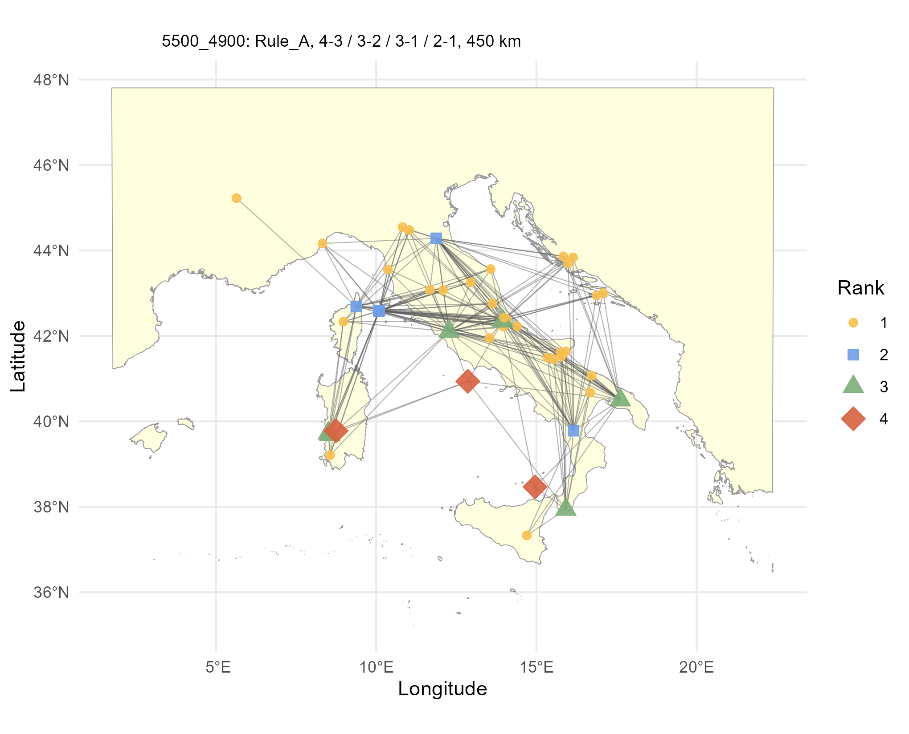
Image not found at this path. Check file name and folder structure.'); this.remove();" />Geographic network map generated for the 450 km threshold. Rule A: parsimonious hierarchical model; allowed links 4-3, 3-2, 3-1, 2-1. Nodes are coloured and shaped by rank; links show permitted connections under the selected rule-distance model.
OUTPUTS/Obsidian_network_5500_4900/Rule_A_450km_map_5500_4900.png
Geographic network map generated for the 500 km threshold. Rule A: parsimonious hierarchical model; allowed links 4-3, 3-2, 3-1, 2-1. Nodes are coloured and shaped by rank; links show permitted connections under the selected rule-distance model.
OUTPUTS/Obsidian_network_5500_4900/Rule_A_500km_map_5500_4900.png
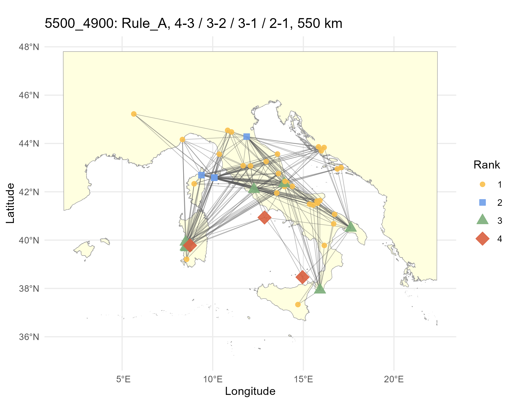
Image not found at this path. Check file name and folder structure.'); this.remove();" />Geographic network map generated for the 550 km threshold. Rule A: parsimonious hierarchical model; allowed links 4-3, 3-2, 3-1, 2-1. Nodes are coloured and shaped by rank; links show permitted connections under the selected rule-distance model.
OUTPUTS/Obsidian_network_5500_4900/Rule_A_550km_map_5500_4900.png
Geographic network map generated for the 600 km threshold. Rule A: parsimonious hierarchical model; allowed links 4-3, 3-2, 3-1, 2-1. Nodes are coloured and shaped by rank; links show permitted connections under the selected rule-distance model.
OUTPUTS/Obsidian_network_5500_4900/Rule_A_600km_map_5500_4900.png
Geographic network map generated for the 650 km threshold. Rule A: parsimonious hierarchical model; allowed links 4-3, 3-2, 3-1, 2-1. Nodes are coloured and shaped by rank; links show permitted connections under the selected rule-distance model.
OUTPUTS/Obsidian_network_5500_4900/Rule_A_650km_map_5500_4900.png
Geographic network map generated for the 100 km threshold. Rule B: less restrictive model; adds direct 4-2 source-to-intermediate links. Nodes are coloured and shaped by rank; links show permitted connections under the selected rule-distance model.
OUTPUTS/Obsidian_network_5500_4900/Rule_B_100km_map_5500_4900.png
Geographic network map generated for the 150 km threshold. Rule B: less restrictive model; adds direct 4-2 source-to-intermediate links. Nodes are coloured and shaped by rank; links show permitted connections under the selected rule-distance model.
OUTPUTS/Obsidian_network_5500_4900/Rule_B_150km_map_5500_4900.png
Geographic network map generated for the 200 km threshold. Rule B: less restrictive model; adds direct 4-2 source-to-intermediate links. Nodes are coloured and shaped by rank; links show permitted connections under the selected rule-distance model.
OUTPUTS/Obsidian_network_5500_4900/Rule_B_200km_map_5500_4900.png
Geographic network map generated for the 250 km threshold. Rule B: less restrictive model; adds direct 4-2 source-to-intermediate links. Nodes are coloured and shaped by rank; links show permitted connections under the selected rule-distance model.
OUTPUTS/Obsidian_network_5500_4900/Rule_B_250km_map_5500_4900.png
Geographic network map generated for the 300 km threshold. Rule B: less restrictive model; adds direct 4-2 source-to-intermediate links. Nodes are coloured and shaped by rank; links show permitted connections under the selected rule-distance model.
OUTPUTS/Obsidian_network_5500_4900/Rule_B_300km_map_5500_4900.png
Geographic network map generated for the 350 km threshold. Rule B: less restrictive model; adds direct 4-2 source-to-intermediate links. Nodes are coloured and shaped by rank; links show permitted connections under the selected rule-distance model.
OUTPUTS/Obsidian_network_5500_4900/Rule_B_350km_map_5500_4900.png
Geographic network map generated for the 400 km threshold. Rule B: less restrictive model; adds direct 4-2 source-to-intermediate links. Nodes are coloured and shaped by rank; links show permitted connections under the selected rule-distance model.
OUTPUTS/Obsidian_network_5500_4900/Rule_B_400km_map_5500_4900.png
Geographic network map generated for the 450 km threshold. Rule B: less restrictive model; adds direct 4-2 source-to-intermediate links. Nodes are coloured and shaped by rank; links show permitted connections under the selected rule-distance model.
OUTPUTS/Obsidian_network_5500_4900/Rule_B_450km_map_5500_4900.png
Geographic network map generated for the 500 km threshold. Rule B: less restrictive model; adds direct 4-2 source-to-intermediate links. Nodes are coloured and shaped by rank; links show permitted connections under the selected rule-distance model.
OUTPUTS/Obsidian_network_5500_4900/Rule_B_500km_map_5500_4900.png
Geographic network map generated for the 550 km threshold. Rule B: less restrictive model; adds direct 4-2 source-to-intermediate links. Nodes are coloured and shaped by rank; links show permitted connections under the selected rule-distance model.
OUTPUTS/Obsidian_network_5500_4900/Rule_B_550km_map_5500_4900.png
Geographic network map generated for the 600 km threshold. Rule B: less restrictive model; adds direct 4-2 source-to-intermediate links. Nodes are coloured and shaped by rank; links show permitted connections under the selected rule-distance model.
OUTPUTS/Obsidian_network_5500_4900/Rule_B_600km_map_5500_4900.png
Geographic network map generated for the 650 km threshold. Rule B: less restrictive model; adds direct 4-2 source-to-intermediate links. Nodes are coloured and shaped by rank; links show permitted connections under the selected rule-distance model.
OUTPUTS/Obsidian_network_5500_4900/Rule_B_650km_map_5500_4900.png
Geographic network map generated for the 100 km threshold. Rule C: strict stepped hierarchical model; allowed links 4-3, 3-2, 2-1. Nodes are coloured and shaped by rank; links show permitted connections under the selected rule-distance model.
OUTPUTS/Obsidian_network_5500_4900/Rule_C_100km_map_5500_4900.png
Geographic network map generated for the 150 km threshold. Rule C: strict stepped hierarchical model; allowed links 4-3, 3-2, 2-1. Nodes are coloured and shaped by rank; links show permitted connections under the selected rule-distance model.
OUTPUTS/Obsidian_network_5500_4900/Rule_C_150km_map_5500_4900.png
Geographic network map generated for the 200 km threshold. Rule C: strict stepped hierarchical model; allowed links 4-3, 3-2, 2-1. Nodes are coloured and shaped by rank; links show permitted connections under the selected rule-distance model.
OUTPUTS/Obsidian_network_5500_4900/Rule_C_200km_map_5500_4900.png
Geographic network map generated for the 250 km threshold. Rule C: strict stepped hierarchical model; allowed links 4-3, 3-2, 2-1. Nodes are coloured and shaped by rank; links show permitted connections under the selected rule-distance model.
OUTPUTS/Obsidian_network_5500_4900/Rule_C_250km_map_5500_4900.png
Geographic network map generated for the 300 km threshold. Rule C: strict stepped hierarchical model; allowed links 4-3, 3-2, 2-1. Nodes are coloured and shaped by rank; links show permitted connections under the selected rule-distance model.
OUTPUTS/Obsidian_network_5500_4900/Rule_C_300km_map_5500_4900.png
Geographic network map generated for the 350 km threshold. Rule C: strict stepped hierarchical model; allowed links 4-3, 3-2, 2-1. Nodes are coloured and shaped by rank; links show permitted connections under the selected rule-distance model.
OUTPUTS/Obsidian_network_5500_4900/Rule_C_350km_map_5500_4900.png
Geographic network map generated for the 400 km threshold. Rule C: strict stepped hierarchical model; allowed links 4-3, 3-2, 2-1. Nodes are coloured and shaped by rank; links show permitted connections under the selected rule-distance model.
OUTPUTS/Obsidian_network_5500_4900/Rule_C_400km_map_5500_4900.png
Geographic network map generated for the 450 km threshold. Rule C: strict stepped hierarchical model; allowed links 4-3, 3-2, 2-1. Nodes are coloured and shaped by rank; links show permitted connections under the selected rule-distance model.
OUTPUTS/Obsidian_network_5500_4900/Rule_C_450km_map_5500_4900.png
Geographic network map generated for the 500 km threshold. Rule C: strict stepped hierarchical model; allowed links 4-3, 3-2, 2-1. Nodes are coloured and shaped by rank; links show permitted connections under the selected rule-distance model.
OUTPUTS/Obsidian_network_5500_4900/Rule_C_500km_map_5500_4900.png
Geographic network map generated for the 550 km threshold. Rule C: strict stepped hierarchical model; allowed links 4-3, 3-2, 2-1. Nodes are coloured and shaped by rank; links show permitted connections under the selected rule-distance model.
OUTPUTS/Obsidian_network_5500_4900/Rule_C_550km_map_5500_4900.png
Geographic network map generated for the 600 km threshold. Rule C: strict stepped hierarchical model; allowed links 4-3, 3-2, 2-1. Nodes are coloured and shaped by rank; links show permitted connections under the selected rule-distance model.
OUTPUTS/Obsidian_network_5500_4900/Rule_C_600km_map_5500_4900.png
Geographic network map generated for the 650 km threshold. Rule C: strict stepped hierarchical model; allowed links 4-3, 3-2, 2-1. Nodes are coloured and shaped by rank; links show permitted connections under the selected rule-distance model.
OUTPUTS/Obsidian_network_5500_4900/Rule_C_650km_map_5500_4900.png
Map of the source-confirmed network retaining the selected source node and sites with confirmed presence of that obsidian source. The caption records whether Rule A or fallback Rule B was used in the underlying model.
OUTPUTS/Obsidian_network_5500_4900/Sardegna_source_confirmed_map_5500_4900.png
Graph-only layout of the same source-confirmed network, useful for reading network topology without geographic constraints.
OUTPUTS/Obsidian_network_5500_4900/Sardegna_source_confirmed_graph_only_5500_4900.png
Map of the source-confirmed network retaining the selected source node and sites with confirmed presence of that obsidian source. The caption records whether Rule A or fallback Rule B was used in the underlying model.
OUTPUTS/Obsidian_network_5500_4900/Lipari_source_confirmed_map_5500_4900.png
Graph-only layout of the same source-confirmed network, useful for reading network topology without geographic constraints.
OUTPUTS/Obsidian_network_5500_4900/Lipari_source_confirmed_graph_only_5500_4900.png
Map of the source-confirmed network retaining the selected source node and sites with confirmed presence of that obsidian source. The caption records whether Rule A or fallback Rule B was used in the underlying model.
OUTPUTS/Obsidian_network_5500_4900/Palmarola_source_confirmed_map_5500_4900.png
Graph-only layout of the same source-confirmed network, useful for reading network topology without geographic constraints.
OUTPUTS/Obsidian_network_5500_4900/Palmarola_source_confirmed_graph_only_5500_4900.png
| Output | Description and use |
|---|---|
OUTPUTS/production_contribution_PN_all_sites.csv | Production-contribution percentage matrix for the full dataset. Each technological class is normalised by its total abundance across all sites. |
OUTPUTS/obs_br_PN_all_sites.csv | Brainerd–Robinson-style similarity matrix calculated on production-contribution values. |
OUTPUTS/production_score_all_sites.csv | Production score for each site, calculated as the sum of blade.PN, flake.PN, core.PN, and by.products.waste.PN. |
OUTPUTS/production_score_rank_thresholds_all_sites.csv | Percentile thresholds used to define Rank 2 and Rank 3. |
OUTPUTS/site_production_score_ranking_all_sites.csv | Final production-score rank assignment for each site. |
OUTPUTS/ranked_sites_all_sites.csv | Cleaned full dataset with production ranks attached. |
OUTPUTS/rank_summary_all_sites.csv | Number of sites assigned to each rank. |
OUTPUTS/adonis_BR_dissimilarity_by_rank_all_sites.csv | PERMANOVA-style test assessing rank differences in Brainerd–Robinson dissimilarity space. |
OUTPUTS/pcoa_BR_by_production_rank_all_sites.csv | PCoA coordinates used to plot the Brainerd–Robinson diagnostic ordination. |
OUTPUTS/pcoa_site_code_lookup_all_sites.csv | Lookup table linking selected site names to short labels used in the PCoA plot. |
OUTPUTS/all_sites_numbered_map_lookup.csv | Lookup table linking numbered map IDs to site names and coordinates. |
| Output | Description |
|---|---|
OUTPUTS/Obsidian_network_6100_5500/ranked_sites_6100_5500.csv | Chronological dataset with full-dataset production ranks attached. |
OUTPUTS/Obsidian_network_6100_5500/unmatched_sites_no_rank_6100_5500.csv | Sites in the chronological dataset that could not be matched to the full-dataset ranking table. |
OUTPUTS/Obsidian_network_6100_5500/*_edges_6100_5500.csv | Directed edge list for each rule-distance model. |
OUTPUTS/Obsidian_network_6100_5500/global_metrics_rule_distance_sweep_6100_5500.csv | Global metrics for all rule-distance networks: nodes, edges, components, isolates, largest component size, and connectivity status. |
OUTPUTS/Obsidian_network_6100_5500/centrality_rule_distance_sweep_6100_5500.csv | Site-level centrality values for all rule-distance models. |
OUTPUTS/Obsidian_network_6100_5500/friedman_rule_comparison_6100_5500.csv | Friedman test results comparing rule sets across shared distance thresholds. |
OUTPUTS/Obsidian_network_6100_5500/pairwise_rule_comparison_6100_5500.csv | Pairwise Wilcoxon signed-rank post-hoc tests with Benjamini–Hochberg correction. |
OUTPUTS/Obsidian_network_6100_5500/first_connected_network_by_rule_6100_5500.csv | First fully connected network identified for each rule set. |
OUTPUTS/Obsidian_network_6100_5500/selected_backbone_network_6100_5500.csv | Backbone network selected for downstream analysis. |
OUTPUTS/Obsidian_network_6100_5500/selected_rule_a_source_filter_backbone_6100_5500.csv | Rule A backbone selected for source-filtered analyses. |
OUTPUTS/Obsidian_network_6100_5500/centrality_by_rank_rule_distance_sweep_6100_5500.csv | Mean centrality values summarised by rank, rule set, and distance threshold. |
OUTPUTS/Obsidian_network_6100_5500/source_confirmed_rule_selection_log_6100_5500.csv | Log documenting Rule A vs Rule B selection and fallback reasons for each source-confirmed network. |
OUTPUTS/Obsidian_network_6100_5500/source_confirmed_metrics_6100_5500.csv | Metrics for source-confirmed networks. |
OUTPUTS/Obsidian_network_6100_5500/<source>_source_confirmed_edges_6100_5500.csv | Edge list for each source-confirmed network. |
OUTPUTS/Obsidian_network_6100_5500/<source>_source_confirmed_vertices_6100_5500.csv | Vertex list for each source-confirmed network. |
| Output | Description |
|---|---|
OUTPUTS/Obsidian_network_5500_4900/ranked_sites_5500_4900.csv | Chronological dataset with full-dataset production ranks attached. |
OUTPUTS/Obsidian_network_5500_4900/unmatched_sites_no_rank_5500_4900.csv | Sites in the chronological dataset that could not be matched to the full-dataset ranking table. |
OUTPUTS/Obsidian_network_5500_4900/*_edges_5500_4900.csv | Directed edge list for each rule-distance model. |
OUTPUTS/Obsidian_network_5500_4900/global_metrics_rule_distance_sweep_5500_4900.csv | Global metrics for all rule-distance networks: nodes, edges, components, isolates, largest component size, and connectivity status. |
OUTPUTS/Obsidian_network_5500_4900/centrality_rule_distance_sweep_5500_4900.csv | Site-level centrality values for all rule-distance models. |
OUTPUTS/Obsidian_network_5500_4900/friedman_rule_comparison_5500_4900.csv | Friedman test results comparing rule sets across shared distance thresholds. |
OUTPUTS/Obsidian_network_5500_4900/pairwise_rule_comparison_5500_4900.csv | Pairwise Wilcoxon signed-rank post-hoc tests with Benjamini–Hochberg correction. |
OUTPUTS/Obsidian_network_5500_4900/first_connected_network_by_rule_5500_4900.csv | First fully connected network identified for each rule set. |
OUTPUTS/Obsidian_network_5500_4900/selected_backbone_network_5500_4900.csv | Backbone network selected for downstream analysis. |
OUTPUTS/Obsidian_network_5500_4900/selected_rule_a_source_filter_backbone_5500_4900.csv | Rule A backbone selected for source-filtered analyses. |
OUTPUTS/Obsidian_network_5500_4900/centrality_by_rank_rule_distance_sweep_5500_4900.csv | Mean centrality values summarised by rank, rule set, and distance threshold. |
OUTPUTS/Obsidian_network_5500_4900/source_confirmed_rule_selection_log_5500_4900.csv | Log documenting Rule A vs Rule B selection and fallback reasons for each source-confirmed network. |
OUTPUTS/Obsidian_network_5500_4900/source_confirmed_metrics_5500_4900.csv | Metrics for source-confirmed networks. |
OUTPUTS/Obsidian_network_5500_4900/<source>_source_confirmed_edges_5500_4900.csv | Edge list for each source-confirmed network. |
OUTPUTS/Obsidian_network_5500_4900/<source>_source_confirmed_vertices_5500_4900.csv | Vertex list for each source-confirmed network. |
install.packages(c(
"openxlsx",
"dplyr",
"tidyr",
"ggplot2",
"igraph",
"sf",
"ggrepel",
"ggspatial",
"vegan",
"units"
))source("CHRONOS.R")
# or from a terminal:
Rscript CHRONOS.RCHRONOS/
├── CHRONOS.R
├── CHRONOS_report.html
├── RAWDATA/
├── MAP/
└── OUTPUTS/The HTML report must remain in the repository root, beside the OUTPUTS/ folder. The figures are loaded using relative paths such as OUTPUTS/PCoA_BR_by_production_rank_all_sites.png.
This repository is released under a dual licensing model for publication:
CHRONOS.R is released under the MIT Licence.Users may reuse, adapt, and redistribute the code, documentation, figures, tables, and report according to the terms of these licences, with appropriate attribution.